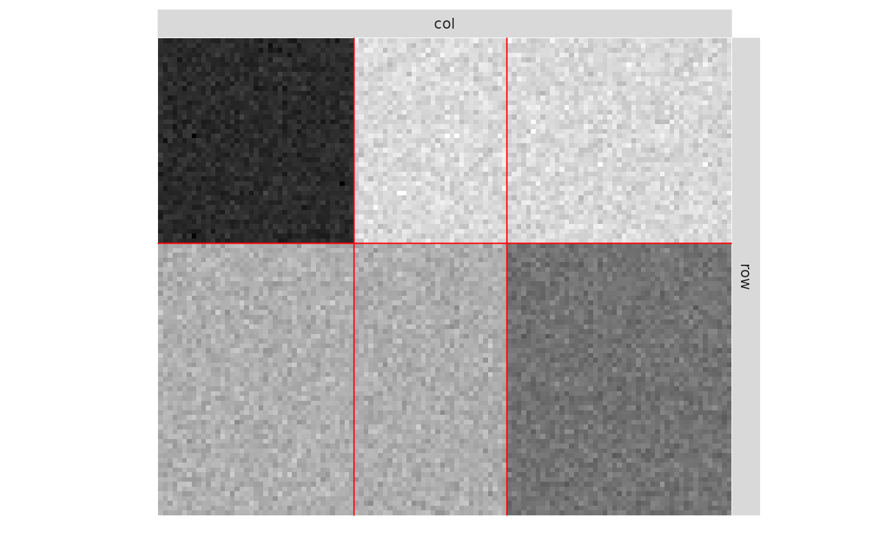
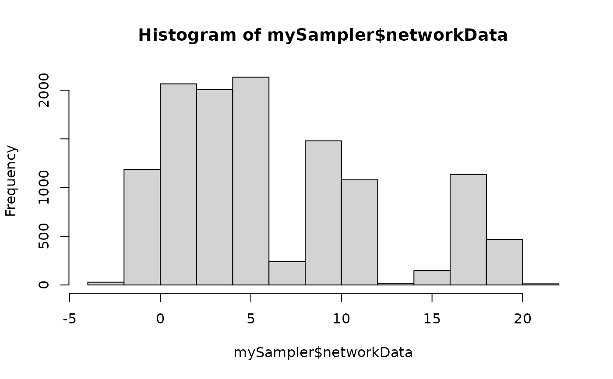

This function samples a simple Stochastic Block Models, with various model for the distribution of the edges: Bernoulli, Poisson, or Gaussian models, and possibly with covariates
sampleBipartiteSBM( nbNodes, blockProp, connectParam, model = "bernoulli", dimLabels = c(row = "rowName", col = "colName"), covariates = list(), covariatesParam = numeric(0) )
Arguments
| nbNodes | number of nodes in the network |
|---|---|
| blockProp | parameters for block proportions: list of size two with row and column block proportions |
| connectParam | list of parameters for connectivity with a matrix of means 'mean' and an optional matrix of variances 'var', the sizes of which must match |
| model | character describing the model for the relation between nodes ( |
| dimLabels | an optional list of labels for each dimension (in row, in column) |
| covariates | a list of matrices with same dimension as mat describing covariates at the edge level. No covariate per Default. |
| covariatesParam | optional vector of covariates effect. A zero length numeric vector by default. |
Value
an object with class BipartiteSBM
Examples
### ======================================= ### BIPARTITE BERNOULLI SBM ## Graph parameters nbNodes <- c(100, 120) blockProp <- list(c(.5, .5), c(1/3, 1/3, 1/3)) # group proportions means <- matrix(runif(6), 2, 3) # connectivity matrix # In Bernoulli SBM, parameters is a list with # a matrix of means 'mean' which are probabilities of connection connectParam <- list(mean = means) ## Graph Sampling dimLabels = c(row='Reader',col='Book') mySampler <- sampleBipartiteSBM(nbNodes, blockProp, connectParam, model = 'bernoulli',dimLabels) plot(mySampler)mySampler$rMemberships() # sample new memberships#> $row #> [,1] [,2] #> [1,] 1 0 #> [2,] 0 1 #> [3,] 1 0 #> [4,] 0 1 #> [5,] 0 1 #> [6,] 1 0 #> [7,] 1 0 #> [8,] 0 1 #> [9,] 0 1 #> [10,] 0 1 #> [11,] 1 0 #> [12,] 1 0 #> [13,] 1 0 #> [14,] 0 1 #> [15,] 0 1 #> [16,] 0 1 #> [17,] 0 1 #> [18,] 1 0 #> [19,] 0 1 #> [20,] 1 0 #> [21,] 1 0 #> [22,] 1 0 #> [23,] 0 1 #> [24,] 1 0 #> [25,] 1 0 #> [26,] 0 1 #> [27,] 1 0 #> [28,] 1 0 #> [29,] 0 1 #> [30,] 0 1 #> [31,] 0 1 #> [32,] 0 1 #> [33,] 1 0 #> [34,] 1 0 #> [35,] 0 1 #> [36,] 1 0 #> [37,] 1 0 #> [38,] 0 1 #> [39,] 0 1 #> [40,] 1 0 #> [41,] 0 1 #> [42,] 1 0 #> [43,] 1 0 #> [44,] 1 0 #> [45,] 1 0 #> [46,] 0 1 #> [47,] 0 1 #> [48,] 1 0 #> [49,] 1 0 #> [50,] 1 0 #> [51,] 1 0 #> [52,] 1 0 #> [53,] 0 1 #> [54,] 0 1 #> [55,] 1 0 #> [56,] 1 0 #> [57,] 1 0 #> [58,] 1 0 #> [59,] 0 1 #> [60,] 1 0 #> [61,] 0 1 #> [62,] 1 0 #> [63,] 1 0 #> [64,] 0 1 #> [65,] 1 0 #> [66,] 1 0 #> [67,] 0 1 #> [68,] 1 0 #> [69,] 1 0 #> [70,] 1 0 #> [71,] 1 0 #> [72,] 1 0 #> [73,] 0 1 #> [74,] 0 1 #> [75,] 1 0 #> [76,] 1 0 #> [77,] 0 1 #> [78,] 1 0 #> [79,] 0 1 #> [80,] 0 1 #> [81,] 0 1 #> [82,] 0 1 #> [83,] 1 0 #> [84,] 1 0 #> [85,] 0 1 #> [86,] 1 0 #> [87,] 0 1 #> [88,] 1 0 #> [89,] 0 1 #> [90,] 0 1 #> [91,] 1 0 #> [92,] 1 0 #> [93,] 1 0 #> [94,] 0 1 #> [95,] 0 1 #> [96,] 1 0 #> [97,] 0 1 #> [98,] 1 0 #> [99,] 0 1 #> [100,] 0 1 #> #> $col #> [,1] [,2] [,3] #> [1,] 0 1 0 #> [2,] 0 0 1 #> [3,] 0 1 0 #> [4,] 0 0 1 #> [5,] 0 0 1 #> [6,] 0 0 1 #> [7,] 0 1 0 #> [8,] 0 1 0 #> [9,] 0 1 0 #> [10,] 1 0 0 #> [11,] 0 1 0 #> [12,] 0 0 1 #> [13,] 0 0 1 #> [14,] 1 0 0 #> [15,] 1 0 0 #> [16,] 1 0 0 #> [17,] 0 0 1 #> [18,] 1 0 0 #> [19,] 1 0 0 #> [20,] 0 1 0 #> [21,] 0 0 1 #> [22,] 0 1 0 #> [23,] 1 0 0 #> [24,] 0 0 1 #> [25,] 0 0 1 #> [26,] 0 1 0 #> [27,] 1 0 0 #> [28,] 1 0 0 #> [29,] 0 0 1 #> [30,] 0 0 1 #> [31,] 0 1 0 #> [32,] 0 0 1 #> [33,] 0 1 0 #> [34,] 0 1 0 #> [35,] 1 0 0 #> [36,] 0 0 1 #> [37,] 0 1 0 #> [38,] 1 0 0 #> [39,] 0 1 0 #> [40,] 0 0 1 #> [41,] 0 0 1 #> [42,] 0 1 0 #> [43,] 1 0 0 #> [44,] 0 1 0 #> [45,] 1 0 0 #> [46,] 0 1 0 #> [47,] 0 1 0 #> [48,] 0 0 1 #> [49,] 0 0 1 #> [50,] 0 0 1 #> [51,] 0 0 1 #> [52,] 0 1 0 #> [53,] 0 0 1 #> [54,] 0 1 0 #> [55,] 0 0 1 #> [56,] 0 0 1 #> [57,] 1 0 0 #> [58,] 1 0 0 #> [59,] 0 0 1 #> [60,] 0 0 1 #> [61,] 1 0 0 #> [62,] 0 1 0 #> [63,] 0 0 1 #> [64,] 0 1 0 #> [65,] 0 0 1 #> [66,] 0 1 0 #> [67,] 0 0 1 #> [68,] 1 0 0 #> [69,] 0 1 0 #> [70,] 1 0 0 #> [71,] 0 0 1 #> [72,] 0 1 0 #> [73,] 0 1 0 #> [74,] 1 0 0 #> [75,] 1 0 0 #> [76,] 0 1 0 #> [77,] 0 0 1 #> [78,] 0 1 0 #> [79,] 0 0 1 #> [80,] 0 0 1 #> [81,] 0 1 0 #> [82,] 0 1 0 #> [83,] 1 0 0 #> [84,] 1 0 0 #> [85,] 0 0 1 #> [86,] 1 0 0 #> [87,] 1 0 0 #> [88,] 1 0 0 #> [89,] 0 1 0 #> [90,] 1 0 0 #> [91,] 1 0 0 #> [92,] 1 0 0 #> [93,] 0 1 0 #> [94,] 1 0 0 #> [95,] 1 0 0 #> [96,] 1 0 0 #> [97,] 1 0 0 #> [98,] 0 1 0 #> [99,] 1 0 0 #> [100,] 0 0 1 #> [101,] 0 1 0 #> [102,] 0 0 1 #> [103,] 0 0 1 #> [104,] 1 0 0 #> [105,] 1 0 0 #> [106,] 1 0 0 #> [107,] 1 0 0 #> [108,] 0 1 0 #> [109,] 0 1 0 #> [110,] 0 0 1 #> [111,] 0 1 0 #> [112,] 0 0 1 #> [113,] 0 0 1 #> [114,] 1 0 0 #> [115,] 0 0 1 #> [116,] 0 0 1 #> [117,] 1 0 0 #> [118,] 0 1 0 #> [119,] 1 0 0 #> [120,] 1 0 0 #>mySampler$rEdges() # sample new edges#> [,1] [,2] [,3] [,4] [,5] [,6] [,7] [,8] [,9] [,10] [,11] [,12] [,13] #> [1,] 1 1 1 0 1 0 0 1 0 1 1 0 1 #> [2,] 0 0 0 0 0 1 1 1 1 0 0 1 0 #> [3,] 1 0 1 1 0 1 0 1 0 1 1 0 0 #> [4,] 0 0 1 1 0 0 1 0 1 0 0 1 0 #> [5,] 0 0 1 1 0 1 1 0 1 0 1 1 1 #> [6,] 1 0 1 0 1 0 0 1 0 1 1 0 1 #> [7,] 1 0 0 1 0 0 0 1 0 1 1 0 1 #> [8,] 0 0 0 0 1 0 1 1 1 0 1 1 1 #> [9,] 1 1 1 1 0 0 0 1 0 1 1 0 1 #> [10,] 0 1 1 0 1 0 1 0 1 0 1 1 0 #> [11,] 0 1 0 1 1 1 0 1 0 1 1 0 1 #> [12,] 1 0 1 1 0 0 0 1 0 1 1 0 1 #> [13,] 0 0 1 0 0 0 1 0 1 0 0 0 0 #> [14,] 1 0 1 1 0 1 0 1 0 1 1 0 1 #> [15,] 0 0 0 0 0 0 1 0 1 0 0 1 1 #> [16,] 0 0 0 0 0 1 1 1 1 0 0 1 0 #> [17,] 0 0 0 0 0 1 0 0 1 1 0 1 0 #> [18,] 1 0 1 1 0 0 0 1 0 1 1 0 1 #> [19,] 1 1 0 1 0 0 1 1 1 0 0 0 0 #> [20,] 0 0 0 0 0 1 1 1 1 0 0 1 0 #> [21,] 1 0 1 1 0 1 0 1 0 1 1 0 1 #> [22,] 1 0 1 1 0 0 0 1 0 1 1 0 1 #> [23,] 1 1 1 0 0 0 0 1 0 1 1 0 1 #> [24,] 1 0 1 1 0 1 0 1 0 1 1 0 1 #> [25,] 1 0 1 0 0 0 0 1 0 1 1 0 1 #> [26,] 0 1 0 1 1 0 1 1 1 0 0 1 0 #> [27,] 0 1 0 0 0 0 0 1 1 0 0 1 1 #> [28,] 0 0 0 1 1 0 1 1 1 1 0 1 1 #> [29,] 1 1 1 1 0 1 0 1 0 1 1 0 0 #> [30,] 1 1 1 1 1 1 0 0 0 1 1 0 1 #> [31,] 1 0 1 1 0 0 0 1 0 1 1 0 0 #> [32,] 1 0 0 1 0 0 1 0 1 1 0 1 0 #> [33,] 0 0 0 1 0 1 0 0 1 0 0 1 0 #> [34,] 0 0 0 0 1 0 1 0 1 1 0 1 0 #> [35,] 1 0 1 1 0 0 1 0 0 1 1 0 1 #> [36,] 1 1 0 0 0 1 1 0 0 1 0 1 1 #> [37,] 0 1 0 1 0 0 1 0 1 0 0 1 0 #> [38,] 0 0 0 1 0 0 1 0 1 0 0 1 0 #> [39,] 1 1 1 1 1 0 0 1 0 1 1 0 1 #> [40,] 1 0 1 1 0 1 0 1 0 0 1 0 1 #> [41,] 1 0 1 1 1 0 0 1 0 1 1 0 1 #> [42,] 1 0 1 1 0 0 1 0 0 1 1 0 1 #> [43,] 0 1 1 0 0 1 0 1 0 1 0 0 1 #> [44,] 0 0 0 0 0 1 1 1 1 0 0 1 1 #> [45,] 1 0 1 1 0 1 0 1 0 1 1 0 1 #> [46,] 0 0 0 0 0 0 1 0 1 0 1 1 0 #> [47,] 1 0 1 0 0 0 0 1 0 0 0 0 0 #> [48,] 1 0 1 1 0 0 0 1 0 0 1 0 0 #> [49,] 1 0 1 1 0 0 0 1 0 1 1 0 0 #> [50,] 0 0 0 0 1 1 1 1 1 1 0 0 1 #> [51,] 1 0 0 0 0 1 1 0 1 0 0 1 0 #> [52,] 0 0 0 1 0 0 0 0 1 0 1 1 1 #> [53,] 1 0 1 0 1 1 0 1 0 1 1 0 1 #> [54,] 1 0 1 1 1 0 0 0 0 1 0 0 1 #> [55,] 0 1 0 0 0 0 1 0 1 1 0 1 0 #> [56,] 1 0 1 1 1 1 0 1 0 1 0 0 0 #> [57,] 0 0 0 0 0 0 1 0 1 1 0 1 1 #> [58,] 1 1 1 0 0 0 0 1 1 1 0 1 1 #> [59,] 1 0 1 1 1 0 0 1 0 0 0 0 0 #> [60,] 1 0 0 0 0 1 1 0 0 0 1 1 0 #> [61,] 0 0 1 0 0 0 1 1 1 1 1 1 0 #> [62,] 0 0 1 1 0 0 1 1 1 1 0 1 0 #> [63,] 1 0 1 1 1 1 1 1 0 1 1 0 1 #> [64,] 1 1 1 0 1 0 0 1 0 1 1 0 1 #> [65,] 0 0 0 0 0 0 1 1 1 1 0 1 1 #> [66,] 1 1 1 1 1 0 1 1 0 1 1 0 1 #> [67,] 1 1 1 0 0 0 0 1 0 1 1 0 0 #> [68,] 1 0 1 0 0 1 0 1 0 1 1 0 1 #> [69,] 0 0 0 1 0 0 1 0 1 0 0 1 0 #> [70,] 0 1 0 0 0 0 1 0 1 0 0 1 0 #> [71,] 0 1 1 1 0 1 0 1 0 1 1 0 1 #> [72,] 0 1 1 1 0 1 0 1 0 1 1 0 1 #> [73,] 1 0 0 0 0 0 1 0 1 0 0 0 1 #> [74,] 0 0 1 0 1 0 1 0 1 1 0 1 0 #> [75,] 1 0 0 0 0 1 1 0 1 0 0 1 0 #> [76,] 1 1 0 1 0 0 1 0 0 1 0 1 1 #> [77,] 1 0 1 1 0 0 0 1 0 1 1 0 1 #> [78,] 1 0 1 1 1 1 0 1 0 1 1 0 1 #> [79,] 0 0 0 1 1 0 1 1 0 1 1 1 0 #> [80,] 1 1 1 0 0 1 1 0 1 1 0 1 0 #> [81,] 1 0 1 1 1 1 0 1 0 1 1 0 1 #> [82,] 1 0 0 0 1 0 0 1 0 0 0 1 0 #> [83,] 0 0 0 1 0 0 1 1 1 0 0 1 1 #> [84,] 0 0 1 0 1 0 1 0 1 0 1 0 1 #> [85,] 0 0 0 1 0 0 1 1 0 1 1 1 0 #> [86,] 1 0 0 0 0 0 1 0 1 1 0 1 0 #> [87,] 0 0 0 1 0 0 1 0 1 0 0 1 1 #> [88,] 1 0 1 1 1 0 0 1 0 1 1 0 1 #> [89,] 1 0 1 0 1 0 0 1 0 0 1 0 1 #> [90,] 0 0 0 1 0 0 1 0 0 0 0 1 0 #> [91,] 0 0 0 0 0 0 1 1 1 1 0 1 1 #> [92,] 1 0 1 1 0 0 0 1 0 1 1 0 1 #> [93,] 1 0 0 0 1 1 1 0 1 0 0 1 0 #> [94,] 0 0 0 0 0 0 1 0 1 1 0 0 0 #> [95,] 1 0 0 1 0 1 1 0 1 1 1 1 0 #> [96,] 1 0 1 1 0 0 0 1 0 0 1 0 1 #> [97,] 0 0 1 0 0 0 1 1 1 1 0 1 1 #> [98,] 0 0 0 1 1 1 1 0 1 0 0 1 1 #> [99,] 0 1 0 0 0 0 1 0 1 0 1 1 1 #> [100,] 0 0 0 0 0 1 1 1 1 1 1 1 0 #> [,14] [,15] [,16] [,17] [,18] [,19] [,20] [,21] [,22] [,23] [,24] [,25] #> [1,] 1 0 0 1 1 1 0 1 0 0 0 0 #> [2,] 0 1 1 0 1 0 0 1 0 1 1 1 #> [3,] 1 0 0 1 0 1 0 1 1 1 1 0 #> [4,] 0 1 1 0 1 0 0 0 0 1 1 0 #> [5,] 0 1 1 1 0 1 0 0 0 0 0 1 #> [6,] 1 0 0 0 1 0 0 1 0 1 1 1 #> [7,] 1 0 0 1 1 1 0 0 1 1 1 0 #> [8,] 0 1 1 0 1 0 1 0 0 1 0 1 #> [9,] 0 0 0 1 1 0 0 1 1 1 1 0 #> [10,] 0 1 1 0 0 0 0 0 1 0 0 1 #> [11,] 1 0 0 1 1 0 0 1 1 0 1 1 #> [12,] 1 0 0 1 1 0 1 1 1 1 1 0 #> [13,] 0 1 1 0 1 1 0 0 0 0 0 0 #> [14,] 1 0 0 1 1 0 0 0 1 1 1 0 #> [15,] 0 0 1 0 0 0 0 0 0 0 1 0 #> [16,] 0 1 0 0 1 0 0 0 0 0 0 0 #> [17,] 0 1 0 0 0 0 1 0 1 0 0 1 #> [18,] 1 0 0 1 1 0 1 0 0 1 1 1 #> [19,] 0 1 1 0 0 0 0 0 0 0 0 0 #> [20,] 0 1 1 0 1 0 0 0 1 1 1 1 #> [21,] 1 1 0 1 1 0 0 0 1 1 0 0 #> [22,] 1 0 0 1 1 0 1 0 1 1 0 1 #> [23,] 1 0 0 1 1 0 1 0 1 1 1 0 #> [24,] 1 0 0 0 0 1 0 0 1 1 0 0 #> [25,] 1 0 0 1 1 0 1 0 1 1 1 0 #> [26,] 0 1 1 0 1 0 0 1 1 1 1 0 #> [27,] 0 1 1 0 0 0 1 0 0 0 0 0 #> [28,] 0 1 1 0 0 0 0 0 0 0 0 0 #> [29,] 1 0 0 0 1 1 0 0 1 1 1 0 #> [30,] 1 1 0 1 1 1 0 0 1 1 1 0 #> [31,] 1 0 0 1 1 1 0 1 1 1 1 0 #> [32,] 0 1 1 0 1 1 0 0 0 1 1 0 #> [33,] 0 1 0 0 1 1 0 1 0 0 1 0 #> [34,] 0 1 1 1 1 0 1 0 0 0 0 1 #> [35,] 1 0 0 1 1 1 0 0 1 1 1 0 #> [36,] 0 1 0 1 1 1 0 0 0 0 0 0 #> [37,] 1 1 1 0 1 0 0 0 0 0 0 0 #> [38,] 0 0 1 1 1 0 1 0 0 1 0 0 #> [39,] 1 0 0 0 1 0 0 0 0 0 1 0 #> [40,] 1 0 0 1 1 1 0 0 1 1 1 0 #> [41,] 1 0 0 0 1 0 0 1 1 1 0 0 #> [42,] 0 0 0 1 1 1 0 1 1 0 1 0 #> [43,] 1 0 0 1 1 0 0 0 1 1 1 0 #> [44,] 1 1 1 0 1 0 1 1 1 1 0 0 #> [45,] 1 0 0 1 1 1 1 0 1 0 1 1 #> [46,] 0 0 1 1 0 0 0 0 1 0 0 0 #> [47,] 1 0 0 1 0 0 0 0 1 1 1 1 #> [48,] 1 0 0 1 0 0 1 0 1 1 1 0 #> [49,] 1 0 0 1 0 1 0 0 1 1 1 1 #> [50,] 0 1 1 1 0 0 0 0 0 0 0 0 #> [51,] 0 1 1 1 1 0 1 0 0 1 1 1 #> [52,] 0 1 1 0 1 1 0 0 1 0 1 1 #> [53,] 1 0 0 1 1 0 0 1 1 1 1 0 #> [54,] 1 0 0 1 1 0 1 0 0 1 1 0 #> [55,] 0 1 0 0 0 0 0 0 0 1 0 0 #> [56,] 1 0 0 1 1 0 0 0 1 1 1 1 #> [57,] 1 1 1 0 0 0 1 0 0 0 1 1 #> [58,] 0 1 1 0 0 1 1 0 1 0 0 1 #> [59,] 1 0 0 1 1 0 1 0 1 1 1 0 #> [60,] 1 1 1 0 1 0 0 0 0 0 1 0 #> [61,] 0 1 0 1 0 0 0 0 0 0 0 0 #> [62,] 1 0 1 1 0 0 1 0 0 0 0 1 #> [63,] 1 0 0 1 1 0 1 1 0 1 1 0 #> [64,] 1 0 0 0 1 0 0 0 1 1 1 1 #> [65,] 0 1 1 0 1 0 1 0 0 1 0 0 #> [66,] 1 0 0 1 1 0 1 1 1 1 1 1 #> [67,] 1 0 0 1 1 1 0 1 1 1 0 0 #> [68,] 1 0 0 1 1 0 1 0 1 1 1 0 #> [69,] 0 1 1 0 0 0 1 1 1 0 1 0 #> [70,] 0 1 1 0 0 0 0 0 0 0 1 0 #> [71,] 0 0 0 1 1 0 1 1 1 1 1 1 #> [72,] 1 0 0 1 0 1 1 0 1 1 1 0 #> [73,] 1 1 0 0 0 0 0 0 1 1 0 0 #> [74,] 0 1 1 1 0 1 1 1 0 0 1 0 #> [75,] 0 1 1 0 1 0 0 0 1 0 0 0 #> [76,] 0 1 1 0 0 0 0 0 0 1 1 1 #> [77,] 0 0 0 1 0 1 0 0 1 0 1 0 #> [78,] 1 0 0 1 1 0 0 0 1 1 1 0 #> [79,] 0 0 1 1 0 0 1 0 0 0 0 0 #> [80,] 0 1 1 0 0 0 0 0 0 0 0 0 #> [81,] 1 0 0 1 1 0 1 0 1 1 1 0 #> [82,] 0 1 1 0 1 1 0 0 1 0 0 0 #> [83,] 0 1 1 0 1 0 0 0 0 1 0 0 #> [84,] 0 0 1 1 0 1 0 0 1 1 1 0 #> [85,] 1 1 1 0 0 1 0 0 1 0 1 0 #> [86,] 0 1 1 0 1 0 0 0 0 0 1 1 #> [87,] 1 1 1 0 0 0 0 0 0 0 0 0 #> [88,] 1 0 0 1 1 0 0 0 0 0 1 1 #> [89,] 1 0 0 1 1 0 1 0 1 1 1 1 #> [90,] 1 1 1 1 0 1 1 1 1 0 0 0 #> [91,] 0 1 1 1 0 0 0 1 0 0 0 0 #> [92,] 0 0 0 1 1 0 1 0 1 1 1 0 #> [93,] 0 1 1 1 1 0 0 0 1 0 0 0 #> [94,] 0 1 0 0 0 0 0 0 0 0 0 1 #> [95,] 1 1 0 0 1 0 0 0 0 0 0 0 #> [96,] 1 0 0 1 1 1 0 1 1 0 1 1 #> [97,] 0 1 1 1 0 0 0 0 0 0 0 1 #> [98,] 1 1 1 1 0 0 0 1 0 0 0 0 #> [99,] 1 1 1 0 0 0 0 0 0 0 0 1 #> [100,] 0 1 1 0 0 0 1 0 1 0 1 0 #> [,26] [,27] [,28] [,29] [,30] [,31] [,32] [,33] [,34] [,35] [,36] [,37] #> [1,] 0 1 0 1 0 0 1 0 0 1 0 1 #> [2,] 1 0 0 0 0 0 0 1 1 0 0 0 #> [3,] 1 0 0 0 0 1 0 0 0 1 0 1 #> [4,] 1 1 1 1 0 0 1 1 1 0 1 0 #> [5,] 1 0 0 1 1 1 0 1 1 0 0 0 #> [6,] 0 1 0 1 1 0 0 0 0 1 0 1 #> [7,] 0 1 0 1 0 1 0 0 0 1 0 1 #> [8,] 1 0 1 0 0 0 0 1 1 1 1 0 #> [9,] 0 1 0 1 0 1 1 0 0 1 1 1 #> [10,] 1 0 1 1 0 1 0 1 1 1 1 0 #> [11,] 0 1 0 1 0 1 0 0 0 1 1 1 #> [12,] 0 1 0 1 0 1 0 0 0 1 0 0 #> [13,] 1 1 1 0 0 1 0 0 0 1 0 0 #> [14,] 0 1 0 1 0 1 0 0 0 1 0 1 #> [15,] 1 1 1 1 1 1 0 1 1 0 0 0 #> [16,] 0 0 1 1 0 0 1 0 1 0 0 0 #> [17,] 1 0 1 1 0 0 0 0 1 1 0 1 #> [18,] 1 1 0 1 0 1 1 0 0 1 0 0 #> [19,] 1 1 0 1 0 1 0 1 1 1 1 0 #> [20,] 1 0 1 1 0 0 0 1 1 1 0 0 #> [21,] 0 1 0 1 1 1 0 0 0 1 1 1 #> [22,] 0 1 0 1 1 1 0 0 0 0 1 1 #> [23,] 0 1 0 1 0 0 1 0 0 1 0 1 #> [24,] 0 1 0 0 0 1 1 0 0 1 0 1 #> [25,] 0 1 0 1 0 1 0 0 0 1 0 1 #> [26,] 0 1 1 0 1 0 0 1 1 0 1 1 #> [27,] 1 0 1 0 0 0 0 1 0 0 0 0 #> [28,] 1 1 1 1 0 0 0 1 1 0 0 0 #> [29,] 0 1 0 1 1 0 0 0 0 1 1 1 #> [30,] 0 1 0 1 0 1 1 0 0 1 1 1 #> [31,] 0 1 0 1 1 1 0 0 0 0 0 1 #> [32,] 1 1 1 1 1 0 0 0 0 0 0 1 #> [33,] 1 0 1 1 0 0 1 1 1 1 0 0 #> [34,] 1 1 1 1 0 1 1 1 1 0 0 0 #> [35,] 0 1 0 1 0 1 0 0 0 1 0 1 #> [36,] 1 0 1 1 0 1 0 1 0 1 0 0 #> [37,] 1 1 1 0 0 0 0 1 1 0 0 1 #> [38,] 1 0 1 0 1 0 0 0 1 0 1 0 #> [39,] 0 1 0 1 1 1 0 0 0 1 0 0 #> [40,] 0 1 0 1 0 1 0 0 0 1 1 1 #> [41,] 0 1 0 1 0 1 1 0 0 1 0 1 #> [42,] 0 1 0 1 1 1 0 0 0 1 0 1 #> [43,] 0 0 0 1 0 1 0 0 0 1 0 1 #> [44,] 1 0 1 1 0 0 0 0 1 0 0 1 #> [45,] 0 1 0 0 0 1 1 0 0 1 1 1 #> [46,] 1 0 1 0 1 0 0 1 1 1 0 1 #> [47,] 0 1 0 1 0 1 0 0 0 1 0 1 #> [48,] 0 1 0 1 0 1 0 0 0 1 0 1 #> [49,] 0 1 0 1 0 1 1 0 0 1 0 1 #> [50,] 0 0 1 0 0 1 0 1 1 0 0 1 #> [51,] 0 1 1 0 0 0 1 1 1 1 0 1 #> [52,] 1 1 1 0 0 0 0 1 1 1 0 0 #> [53,] 0 1 0 0 0 1 0 0 0 1 0 1 #> [54,] 0 1 0 1 0 1 0 0 0 1 0 1 #> [55,] 1 0 1 0 0 0 0 1 1 0 0 0 #> [56,] 0 1 0 1 0 1 1 0 0 1 0 1 #> [57,] 1 1 1 1 0 0 0 1 1 0 0 0 #> [58,] 0 0 1 0 0 0 1 0 1 0 0 1 #> [59,] 0 1 0 1 0 1 0 0 0 1 0 1 #> [60,] 1 0 1 0 0 0 0 1 1 0 1 0 #> [61,] 1 1 0 0 0 0 1 1 1 1 0 0 #> [62,] 1 0 0 1 0 0 0 1 1 0 1 0 #> [63,] 0 1 0 1 0 1 1 0 0 1 0 1 #> [64,] 0 1 0 0 0 1 0 0 1 1 1 1 #> [65,] 0 0 1 0 0 0 0 1 1 0 0 0 #> [66,] 0 1 0 0 1 0 0 0 0 1 0 1 #> [67,] 0 1 0 1 1 0 1 0 0 1 0 1 #> [68,] 0 1 0 1 1 1 0 0 0 1 0 0 #> [69,] 1 0 1 0 1 0 0 1 1 1 1 0 #> [70,] 1 0 1 0 0 0 0 0 0 1 0 1 #> [71,] 0 1 0 1 0 1 0 0 0 1 0 1 #> [72,] 0 1 0 1 0 1 0 0 0 1 0 1 #> [73,] 1 1 1 0 0 0 1 1 1 0 1 0 #> [74,] 1 0 1 0 0 1 0 1 1 0 0 0 #> [75,] 1 0 1 0 0 1 0 0 1 0 1 0 #> [76,] 0 1 0 0 0 0 0 1 1 0 0 0 #> [77,] 0 1 0 1 0 0 0 0 0 0 0 1 #> [78,] 0 0 0 1 0 1 0 0 0 1 1 1 #> [79,] 0 1 1 0 1 0 0 1 0 0 0 1 #> [80,] 1 0 1 0 1 0 0 1 1 0 0 0 #> [81,] 0 0 0 0 1 1 0 0 0 1 1 1 #> [82,] 1 0 0 0 1 1 0 1 1 1 0 1 #> [83,] 0 0 1 0 0 1 0 1 1 0 0 0 #> [84,] 1 1 1 0 0 0 0 1 1 0 0 1 #> [85,] 0 0 1 0 0 0 1 0 1 0 0 0 #> [86,] 1 1 0 1 1 1 1 1 1 0 0 1 #> [87,] 1 1 1 1 0 0 1 1 0 0 0 0 #> [88,] 0 0 0 1 0 1 0 0 0 1 0 1 #> [89,] 0 0 0 1 0 1 0 0 0 1 0 1 #> [90,] 0 0 0 1 0 0 1 1 1 1 0 0 #> [91,] 1 0 1 1 0 1 0 1 1 0 0 0 #> [92,] 0 1 0 1 1 1 0 0 0 1 0 1 #> [93,] 1 1 1 0 0 0 0 1 1 1 0 0 #> [94,] 1 0 1 1 0 1 1 1 1 0 0 0 #> [95,] 1 0 0 0 0 0 1 1 1 0 0 0 #> [96,] 0 1 0 1 1 1 0 0 0 1 0 1 #> [97,] 1 0 1 0 0 0 1 1 1 0 0 0 #> [98,] 1 1 1 0 0 1 1 1 1 0 0 1 #> [99,] 1 0 1 0 0 1 0 1 1 0 1 0 #> [100,] 1 0 1 0 0 0 0 1 1 0 1 1 #> [,38] [,39] [,40] [,41] [,42] [,43] [,44] [,45] [,46] [,47] [,48] [,49] #> [1,] 0 0 0 0 0 0 0 1 0 0 0 0 #> [2,] 1 1 1 1 1 1 1 1 0 0 1 1 #> [3,] 1 0 0 0 1 1 0 1 0 0 0 0 #> [4,] 1 1 0 1 0 0 0 0 0 1 1 1 #> [5,] 0 1 1 1 0 1 0 1 1 0 1 1 #> [6,] 1 0 0 0 1 0 0 0 0 0 0 0 #> [7,] 1 0 0 0 0 1 0 0 0 0 0 0 #> [8,] 0 1 1 1 0 0 1 0 0 0 1 1 #> [9,] 0 0 1 0 0 1 1 0 1 0 0 0 #> [10,] 0 1 1 1 0 0 0 0 1 0 1 1 #> [11,] 1 0 0 0 0 0 1 0 0 0 0 0 #> [12,] 1 0 0 0 0 1 0 0 1 0 0 0 #> [13,] 0 1 1 1 0 0 0 0 0 0 1 1 #> [14,] 0 0 0 0 0 1 0 0 1 0 0 0 #> [15,] 0 1 1 1 0 0 1 0 0 1 1 1 #> [16,] 1 1 1 1 0 0 0 0 0 0 1 1 #> [17,] 0 1 1 1 0 0 1 0 0 0 1 1 #> [18,] 1 0 0 0 0 0 0 0 0 1 0 0 #> [19,] 0 1 1 1 0 1 0 0 0 0 1 1 #> [20,] 0 1 1 1 1 1 1 0 0 1 0 1 #> [21,] 1 0 0 0 0 0 0 0 1 0 0 0 #> [22,] 1 0 0 0 0 0 0 0 0 0 0 0 #> [23,] 0 0 0 0 0 1 1 0 0 0 0 0 #> [24,] 1 0 0 0 1 1 0 0 0 1 0 0 #> [25,] 1 0 0 0 0 1 0 0 0 0 0 0 #> [26,] 1 1 1 1 0 1 0 0 0 1 0 0 #> [27,] 0 1 1 0 0 1 0 1 0 1 0 0 #> [28,] 1 1 1 1 0 0 0 0 0 0 1 1 #> [29,] 1 0 0 0 0 0 0 0 1 1 0 0 #> [30,] 1 0 0 0 0 0 0 0 0 0 0 0 #> [31,] 1 0 0 0 1 0 1 1 0 1 0 0 #> [32,] 0 1 1 1 0 0 0 1 0 0 1 1 #> [33,] 0 1 1 1 0 1 1 0 0 0 1 1 #> [34,] 0 1 1 1 0 0 0 1 0 1 1 1 #> [35,] 1 0 0 0 0 0 0 0 0 0 0 0 #> [36,] 1 1 1 1 0 0 0 1 1 0 1 1 #> [37,] 1 1 0 0 0 0 0 0 0 1 1 0 #> [38,] 0 1 1 1 0 0 0 0 1 0 1 1 #> [39,] 0 0 0 0 1 0 1 0 0 0 0 0 #> [40,] 1 0 0 1 0 0 0 1 0 1 0 0 #> [41,] 1 0 0 0 1 0 0 0 1 0 0 0 #> [42,] 1 0 0 0 0 0 0 1 0 0 0 0 #> [43,] 1 0 0 0 0 1 0 0 0 0 0 0 #> [44,] 0 1 1 0 1 0 0 0 0 1 1 1 #> [45,] 1 0 0 0 0 0 0 1 1 0 0 0 #> [46,] 0 1 1 0 1 0 0 0 0 0 0 0 #> [47,] 1 0 0 0 0 1 0 0 0 0 0 0 #> [48,] 1 0 0 0 1 0 0 1 0 0 0 0 #> [49,] 1 0 0 0 1 1 0 0 0 0 0 0 #> [50,] 0 1 1 1 0 0 1 1 0 0 1 1 #> [51,] 0 1 1 0 1 1 0 1 0 1 1 1 #> [52,] 1 0 0 1 0 0 0 0 1 0 1 0 #> [53,] 1 0 0 0 0 0 1 1 1 0 0 0 #> [54,] 1 0 0 0 0 1 1 1 1 1 0 0 #> [55,] 0 1 1 1 0 0 1 0 1 0 1 1 #> [56,] 1 0 0 0 1 0 1 0 1 1 0 0 #> [57,] 0 1 1 1 1 0 1 0 0 0 0 1 #> [58,] 0 1 1 0 1 0 0 0 0 0 0 1 #> [59,] 1 0 0 0 0 1 1 0 1 0 0 0 #> [60,] 0 1 1 1 0 0 0 0 0 0 1 1 #> [61,] 0 1 1 1 1 0 0 0 1 1 1 1 #> [62,] 0 0 1 1 0 0 0 0 1 0 1 1 #> [63,] 0 0 0 0 1 0 0 1 0 1 0 0 #> [64,] 1 0 0 0 0 0 0 1 0 0 0 0 #> [65,] 0 0 1 1 0 1 1 1 0 0 1 1 #> [66,] 1 0 0 0 1 1 1 1 1 0 0 0 #> [67,] 1 0 0 0 0 0 0 0 1 1 0 0 #> [68,] 1 0 0 0 1 0 0 1 0 0 0 0 #> [69,] 0 0 1 1 0 1 1 0 0 1 1 1 #> [70,] 0 1 1 0 0 1 0 0 0 0 1 1 #> [71,] 1 0 0 0 0 0 0 0 0 0 0 1 #> [72,] 0 0 0 1 1 0 1 0 0 0 0 0 #> [73,] 0 1 0 1 0 0 0 0 0 1 1 1 #> [74,] 0 1 1 1 1 1 1 0 1 1 1 1 #> [75,] 0 1 1 1 0 0 1 0 0 0 1 1 #> [76,] 1 1 1 1 0 0 0 1 1 0 1 1 #> [77,] 0 1 0 0 0 1 1 1 1 1 0 0 #> [78,] 1 0 0 0 1 1 1 1 0 0 0 0 #> [79,] 1 0 1 1 0 1 0 0 1 0 1 1 #> [80,] 1 0 0 1 0 0 0 0 0 0 1 1 #> [81,] 1 0 0 0 1 1 1 1 1 0 0 0 #> [82,] 0 1 1 1 0 0 0 0 0 1 1 1 #> [83,] 0 1 1 1 0 0 0 0 0 0 1 1 #> [84,] 0 1 1 1 0 0 1 1 0 0 1 1 #> [85,] 0 1 1 1 0 0 0 0 0 0 0 1 #> [86,] 1 1 1 1 0 0 0 0 1 1 1 1 #> [87,] 0 1 0 1 1 0 0 1 0 0 1 0 #> [88,] 1 0 0 0 0 0 1 0 1 1 0 0 #> [89,] 1 0 0 0 0 1 0 0 1 0 0 0 #> [90,] 0 1 1 1 1 0 0 0 0 0 1 1 #> [91,] 0 1 1 1 0 1 1 0 0 0 1 0 #> [92,] 1 0 0 0 0 0 0 1 0 0 0 0 #> [93,] 1 1 1 1 0 0 1 0 0 1 1 1 #> [94,] 0 1 1 1 1 1 0 0 1 0 1 1 #> [95,] 0 0 1 1 0 0 0 0 1 0 1 1 #> [96,] 1 0 1 0 0 0 0 0 0 1 0 0 #> [97,] 1 1 1 1 0 0 0 1 0 0 1 1 #> [98,] 0 1 1 1 1 0 1 0 0 0 1 0 #> [99,] 0 1 0 1 0 1 0 1 0 1 1 1 #> [100,] 1 1 0 1 0 1 0 1 1 0 1 1 #> [,50] [,51] [,52] [,53] [,54] [,55] [,56] [,57] [,58] [,59] [,60] [,61] #> [1,] 1 0 0 1 1 0 0 1 1 1 0 0 #> [2,] 0 1 1 1 0 0 1 1 0 0 0 1 #> [3,] 1 0 0 0 0 1 0 1 1 1 0 0 #> [4,] 1 0 1 0 0 1 0 1 1 0 0 1 #> [5,] 0 1 1 0 1 0 1 0 0 1 1 0 #> [6,] 1 0 0 1 0 1 0 1 0 1 0 0 #> [7,] 0 0 0 0 1 0 0 1 1 1 0 0 #> [8,] 1 1 1 0 1 1 1 1 0 1 0 1 #> [9,] 1 0 0 0 1 0 0 1 0 1 0 0 #> [10,] 0 1 1 0 0 0 1 1 0 0 0 0 #> [11,] 1 0 0 1 0 0 0 1 1 0 1 0 #> [12,] 0 0 1 1 1 1 0 1 0 1 0 1 #> [13,] 0 1 0 0 0 1 1 1 0 0 0 1 #> [14,] 1 0 0 0 0 1 0 0 0 1 0 0 #> [15,] 1 0 0 1 0 0 1 0 1 1 0 1 #> [16,] 0 1 0 0 1 0 1 0 1 0 1 1 #> [17,] 0 1 0 1 0 0 1 0 1 0 0 1 #> [18,] 1 0 0 0 1 0 0 1 0 1 0 0 #> [19,] 1 0 0 1 0 0 0 1 1 1 1 0 #> [20,] 0 1 0 1 0 0 0 1 0 0 0 1 #> [21,] 1 0 0 0 0 0 0 1 0 1 1 1 #> [22,] 1 0 0 0 0 1 0 1 1 1 1 0 #> [23,] 0 0 0 0 0 1 0 1 0 1 0 0 #> [24,] 1 0 0 1 0 0 0 1 1 1 0 0 #> [25,] 1 0 0 0 1 1 0 1 1 1 1 0 #> [26,] 0 1 1 1 1 1 0 0 0 0 1 1 #> [27,] 0 1 1 0 0 1 1 1 0 0 0 1 #> [28,] 1 0 1 0 0 1 1 1 1 1 0 1 #> [29,] 1 0 0 0 0 0 0 1 1 1 0 0 #> [30,] 1 0 0 1 1 0 0 0 0 1 0 0 #> [31,] 1 1 0 0 0 1 0 1 0 1 0 0 #> [32,] 0 0 1 0 0 0 1 0 1 0 1 0 #> [33,] 0 1 1 0 0 0 0 0 0 1 1 1 #> [34,] 0 1 0 1 0 0 1 1 0 0 0 1 #> [35,] 0 0 0 1 1 0 0 1 1 1 0 0 #> [36,] 1 1 1 1 0 0 1 0 0 1 0 1 #> [37,] 1 1 1 1 0 1 1 0 1 0 0 1 #> [38,] 1 1 1 0 0 0 1 0 0 0 0 1 #> [39,] 1 0 0 0 1 1 0 1 0 1 1 0 #> [40,] 1 0 0 0 1 0 0 1 1 1 1 0 #> [41,] 1 0 0 0 1 1 0 0 0 1 0 0 #> [42,] 1 0 0 1 0 1 0 1 1 1 1 0 #> [43,] 1 0 0 0 1 0 0 1 0 1 0 0 #> [44,] 0 1 0 0 1 0 1 0 0 0 0 1 #> [45,] 1 0 0 0 1 1 0 0 0 0 1 0 #> [46,] 0 1 1 0 0 0 1 0 0 0 1 1 #> [47,] 0 0 0 0 0 1 0 1 1 1 1 0 #> [48,] 1 0 0 1 0 0 0 1 0 1 1 1 #> [49,] 1 0 0 0 0 1 0 1 0 0 1 0 #> [50,] 0 1 0 0 0 1 1 1 1 0 1 1 #> [51,] 0 1 0 1 1 0 1 0 0 0 0 1 #> [52,] 0 0 1 0 0 0 1 0 0 0 0 1 #> [53,] 1 0 0 0 1 0 0 1 1 1 0 0 #> [54,] 1 0 0 0 0 1 0 0 0 1 0 0 #> [55,] 1 1 1 0 0 0 1 0 0 0 1 1 #> [56,] 1 0 0 0 0 0 0 1 0 1 1 0 #> [57,] 0 1 1 0 0 0 1 0 1 0 0 1 #> [58,] 1 1 1 0 0 0 0 0 0 0 0 0 #> [59,] 1 0 0 0 0 0 0 0 0 1 0 1 #> [60,] 1 1 1 0 1 1 1 1 0 0 0 1 #> [61,] 0 1 1 0 0 0 1 0 1 0 0 1 #> [62,] 0 1 1 0 1 0 1 0 0 0 1 1 #> [63,] 1 0 0 1 1 0 0 1 1 1 1 0 #> [64,] 0 0 0 0 0 0 0 1 1 1 0 0 #> [65,] 1 1 1 0 0 0 1 0 1 0 0 1 #> [66,] 0 0 0 0 1 1 0 1 0 1 0 0 #> [67,] 1 0 0 0 0 1 0 1 0 0 1 0 #> [68,] 1 0 0 0 1 0 0 1 0 1 0 0 #> [69,] 0 1 1 0 0 1 1 1 1 0 0 1 #> [70,] 0 1 1 0 0 0 1 1 1 1 1 1 #> [71,] 1 0 0 1 0 0 0 1 0 1 1 0 #> [72,] 1 0 0 0 0 0 0 1 0 1 0 0 #> [73,] 1 1 0 0 1 1 1 0 0 0 0 1 #> [74,] 1 1 1 0 0 0 1 0 0 0 0 1 #> [75,] 0 1 1 1 0 0 0 1 0 1 1 1 #> [76,] 0 1 1 0 0 1 1 0 0 0 0 1 #> [77,] 1 0 0 0 1 0 0 1 1 1 0 0 #> [78,] 0 0 0 1 0 1 0 1 0 0 0 0 #> [79,] 0 0 1 0 0 1 0 0 1 1 0 1 #> [80,] 0 1 1 0 0 0 1 0 0 0 1 1 #> [81,] 1 0 0 0 0 0 1 1 0 1 1 0 #> [82,] 1 1 1 0 0 0 0 1 0 0 0 0 #> [83,] 0 1 1 1 1 0 1 0 0 1 1 1 #> [84,] 1 1 1 1 1 1 1 0 1 1 1 0 #> [85,] 1 0 1 0 1 0 1 1 1 1 1 1 #> [86,] 1 1 1 0 0 0 1 1 0 0 0 1 #> [87,] 0 1 1 0 0 0 1 0 0 1 0 1 #> [88,] 1 0 0 0 1 0 0 1 0 1 0 0 #> [89,] 1 0 0 1 0 0 0 1 0 0 0 0 #> [90,] 0 0 1 0 0 1 1 0 0 0 0 1 #> [91,] 1 1 1 1 1 0 1 1 0 0 0 1 #> [92,] 1 0 0 0 0 0 0 0 0 1 1 0 #> [93,] 0 1 1 0 0 0 1 0 0 0 1 1 #> [94,] 0 1 1 1 0 0 1 0 0 1 0 1 #> [95,] 1 1 1 0 1 1 1 0 0 1 1 1 #> [96,] 1 0 0 0 1 0 0 0 1 1 1 0 #> [97,] 1 1 0 0 0 1 1 1 1 0 0 1 #> [98,] 1 1 1 0 0 0 1 1 0 0 0 1 #> [99,] 0 1 1 1 1 0 1 0 0 1 1 1 #> [100,] 0 1 1 0 0 1 0 0 0 0 0 1 #> [,62] [,63] [,64] [,65] [,66] [,67] [,68] [,69] [,70] [,71] [,72] [,73] #> [1,] 1 1 0 0 1 1 0 0 1 1 0 1 #> [2,] 1 0 0 1 0 0 0 1 0 1 1 1 #> [3,] 1 1 0 0 0 1 0 1 1 1 0 1 #> [4,] 0 0 1 1 0 1 0 1 0 0 1 0 #> [5,] 1 0 1 1 0 0 0 0 0 0 1 0 #> [6,] 1 1 0 0 0 1 0 0 1 1 0 1 #> [7,] 1 1 0 0 0 1 0 0 1 1 0 1 #> [8,] 1 1 1 1 1 1 0 1 0 0 1 1 #> [9,] 1 1 0 0 0 1 1 0 1 1 0 1 #> [10,] 0 0 1 1 1 0 1 1 0 0 1 0 #> [11,] 1 0 0 0 0 1 1 0 1 1 0 1 #> [12,] 1 1 0 0 0 1 1 0 0 1 0 1 #> [13,] 1 1 1 1 0 1 1 1 0 0 0 0 #> [14,] 1 1 0 0 0 1 0 1 1 1 0 1 #> [15,] 1 0 1 1 0 1 0 0 0 0 1 0 #> [16,] 1 0 1 1 0 0 0 0 0 0 1 0 #> [17,] 0 0 1 1 0 0 0 0 0 1 1 0 #> [18,] 1 1 0 0 1 1 1 0 1 1 0 1 #> [19,] 0 1 1 0 1 0 0 1 1 0 1 0 #> [20,] 1 1 1 1 0 0 0 0 0 0 1 0 #> [21,] 1 0 0 0 1 1 1 1 1 1 0 1 #> [22,] 1 1 0 0 1 1 0 1 1 1 0 0 #> [23,] 1 1 0 0 0 1 0 1 1 1 0 1 #> [24,] 1 1 0 0 0 0 0 0 1 0 0 1 #> [25,] 1 1 0 0 0 1 0 1 1 1 0 1 #> [26,] 1 0 1 1 0 0 0 0 1 0 1 0 #> [27,] 0 1 1 1 0 0 0 0 1 1 1 0 #> [28,] 0 0 1 1 0 0 1 1 1 0 1 1 #> [29,] 1 1 0 0 1 1 0 0 1 1 0 0 #> [30,] 1 1 0 0 0 1 1 0 0 1 0 1 #> [31,] 1 1 0 0 0 1 0 1 1 1 0 1 #> [32,] 1 0 1 1 0 0 0 0 0 0 1 0 #> [33,] 1 0 1 0 0 0 1 0 0 0 1 0 #> [34,] 0 1 1 1 0 0 0 0 1 1 0 0 #> [35,] 0 1 0 0 0 1 0 1 1 1 0 1 #> [36,] 0 0 1 0 0 1 1 0 0 0 1 1 #> [37,] 0 0 1 1 1 1 1 0 0 0 1 0 #> [38,] 0 0 1 1 0 1 0 1 0 1 1 1 #> [39,] 1 1 0 0 0 1 0 1 1 1 0 1 #> [40,] 1 0 0 0 1 1 0 1 1 1 0 1 #> [41,] 1 1 0 0 0 1 0 0 1 1 0 1 #> [42,] 1 1 0 0 0 1 0 0 1 1 0 1 #> [43,] 1 1 0 0 0 0 0 0 1 1 0 1 #> [44,] 0 1 1 1 0 1 0 0 0 1 1 0 #> [45,] 1 1 0 0 0 1 1 1 0 1 0 0 #> [46,] 0 0 1 1 0 1 0 0 1 0 1 0 #> [47,] 1 1 0 0 1 1 0 0 1 1 0 1 #> [48,] 1 1 0 1 0 1 0 1 1 1 0 1 #> [49,] 1 1 0 0 0 1 0 1 0 1 0 1 #> [50,] 1 0 0 1 0 0 0 0 1 1 1 0 #> [51,] 1 0 1 1 0 1 0 0 1 0 1 0 #> [52,] 0 0 1 1 0 0 0 1 0 0 1 0 #> [53,] 1 1 0 0 0 0 1 0 1 1 0 0 #> [54,] 1 1 0 0 1 1 1 0 1 1 0 0 #> [55,] 0 1 1 1 1 0 0 0 0 0 1 0 #> [56,] 1 1 1 0 0 1 1 1 1 1 0 1 #> [57,] 0 0 1 1 1 0 0 0 0 0 1 0 #> [58,] 0 0 1 1 0 0 0 1 1 0 1 0 #> [59,] 1 1 0 0 0 1 0 0 1 1 0 1 #> [60,] 0 1 0 1 1 1 0 0 0 0 1 0 #> [61,] 1 0 1 1 0 0 0 0 1 0 1 1 #> [62,] 0 0 1 1 0 0 1 1 0 0 1 0 #> [63,] 1 1 0 0 1 1 1 0 0 1 0 1 #> [64,] 1 1 0 0 1 1 0 0 1 1 0 1 #> [65,] 0 1 1 1 0 0 0 0 0 0 1 0 #> [66,] 1 1 0 0 0 1 0 0 1 0 0 1 #> [67,] 1 0 0 0 1 1 0 0 0 1 0 0 #> [68,] 1 1 0 0 1 0 0 1 0 1 0 1 #> [69,] 0 0 1 1 0 0 0 0 0 0 1 0 #> [70,] 1 0 1 0 0 1 0 0 0 0 0 0 #> [71,] 1 1 0 0 0 1 1 0 1 1 0 1 #> [72,] 1 1 0 0 0 1 0 1 1 1 0 0 #> [73,] 1 0 0 0 0 1 0 1 1 1 1 0 #> [74,] 0 1 0 1 0 0 0 0 0 0 1 0 #> [75,] 1 0 1 1 0 1 1 1 0 0 1 0 #> [76,] 1 0 0 1 0 0 1 0 0 1 1 1 #> [77,] 1 1 0 0 0 1 1 0 1 1 0 1 #> [78,] 0 1 0 0 0 1 0 1 1 1 0 1 #> [79,] 0 0 1 1 0 0 0 0 1 0 1 0 #> [80,] 0 1 1 1 0 0 0 0 1 1 1 1 #> [81,] 1 1 0 0 0 1 0 1 1 1 0 1 #> [82,] 0 0 1 1 0 0 1 0 0 0 1 0 #> [83,] 0 0 1 0 1 0 1 0 0 1 1 0 #> [84,] 1 0 1 1 1 0 1 0 0 0 1 0 #> [85,] 0 1 1 0 0 0 1 0 0 0 1 0 #> [86,] 0 1 1 1 1 1 1 0 1 0 1 0 #> [87,] 0 1 1 0 0 0 1 0 0 0 1 1 #> [88,] 1 0 0 0 0 1 0 0 1 1 0 1 #> [89,] 1 1 0 0 1 1 0 1 1 1 0 1 #> [90,] 0 1 1 1 1 1 1 0 0 0 1 1 #> [91,] 1 1 1 1 1 1 0 1 0 1 1 1 #> [92,] 1 0 1 0 0 1 1 0 1 1 0 1 #> [93,] 1 0 1 1 0 0 0 0 0 1 1 0 #> [94,] 0 0 1 1 1 1 0 0 1 0 1 1 #> [95,] 0 1 1 1 0 0 0 0 0 0 1 0 #> [96,] 1 1 0 0 1 1 1 1 1 1 0 1 #> [97,] 1 0 1 1 0 0 0 1 0 0 1 0 #> [98,] 1 0 0 1 1 0 0 0 1 0 1 1 #> [99,] 1 0 1 1 0 0 0 0 0 1 1 1 #> [100,] 0 0 1 1 0 1 1 0 1 0 0 0 #> [,74] [,75] [,76] [,77] [,78] [,79] [,80] [,81] [,82] [,83] [,84] [,85] #> [1,] 0 0 0 1 0 0 1 0 0 0 0 0 #> [2,] 1 1 1 1 0 0 0 1 0 1 0 1 #> [3,] 0 0 0 0 0 1 1 1 1 0 0 0 #> [4,] 1 0 1 0 0 1 1 0 1 1 0 1 #> [5,] 1 1 1 0 1 0 0 0 0 1 0 1 #> [6,] 0 0 0 1 1 0 0 1 1 0 0 0 #> [7,] 0 1 0 1 0 0 1 1 1 0 1 0 #> [8,] 1 0 1 1 1 0 0 1 0 0 1 1 #> [9,] 0 0 0 1 1 0 1 1 1 0 0 0 #> [10,] 1 0 0 0 1 0 0 0 1 1 1 1 #> [11,] 0 0 0 1 0 0 1 1 1 0 0 0 #> [12,] 0 0 0 1 1 1 0 1 1 0 1 0 #> [13,] 1 0 0 0 1 1 0 0 0 1 1 1 #> [14,] 0 1 0 1 0 0 1 1 1 0 0 0 #> [15,] 1 1 0 0 1 0 0 0 0 1 0 0 #> [16,] 1 1 1 0 0 1 0 0 1 1 1 1 #> [17,] 1 1 1 0 1 0 0 1 0 1 1 1 #> [18,] 1 0 0 1 0 1 1 1 1 0 0 0 #> [19,] 0 0 1 0 0 1 0 0 0 1 0 1 #> [20,] 1 0 0 0 0 0 1 0 0 1 0 1 #> [21,] 0 0 0 0 0 1 1 1 1 0 0 0 #> [22,] 0 0 0 1 0 0 1 1 1 0 1 0 #> [23,] 0 1 0 1 0 0 1 1 1 0 1 0 #> [24,] 0 0 0 1 0 1 1 1 1 0 0 0 #> [25,] 0 0 0 1 0 0 0 1 1 0 0 0 #> [26,] 1 1 1 0 0 0 1 0 1 0 0 1 #> [27,] 1 0 1 0 1 0 0 0 0 1 0 1 #> [28,] 1 1 1 0 0 0 0 0 0 1 1 1 #> [29,] 0 0 0 1 0 0 1 0 0 0 1 0 #> [30,] 0 0 0 1 0 1 1 1 1 0 0 0 #> [31,] 0 1 0 0 1 0 1 1 1 0 0 0 #> [32,] 1 0 1 0 0 0 1 0 0 0 0 1 #> [33,] 1 0 1 0 0 0 1 1 1 1 0 1 #> [34,] 1 1 1 0 0 0 0 0 0 1 0 1 #> [35,] 0 0 0 1 1 0 1 1 0 0 1 0 #> [36,] 1 0 1 0 1 0 0 1 0 1 0 1 #> [37,] 1 0 1 0 0 0 0 0 0 1 1 1 #> [38,] 0 0 1 0 1 0 0 0 0 1 0 1 #> [39,] 0 0 0 0 0 0 1 1 1 0 1 0 #> [40,] 0 0 0 1 0 0 1 1 0 1 1 0 #> [41,] 0 0 0 1 0 1 1 1 1 0 1 0 #> [42,] 0 0 0 1 0 0 0 1 1 0 0 0 #> [43,] 0 0 0 1 0 0 1 1 1 0 1 0 #> [44,] 1 1 0 1 0 1 0 0 0 1 0 0 #> [45,] 0 0 0 1 1 0 1 1 1 0 1 0 #> [46,] 1 0 1 0 1 0 1 0 0 1 1 1 #> [47,] 0 0 0 1 1 0 1 1 1 0 0 0 #> [48,] 0 0 0 1 1 0 1 1 1 0 0 0 #> [49,] 0 0 0 1 0 0 0 1 1 0 0 0 #> [50,] 1 0 0 0 1 1 1 0 0 1 1 1 #> [51,] 1 1 1 1 0 0 0 0 1 1 0 1 #> [52,] 1 0 1 0 1 0 0 0 1 1 0 0 #> [53,] 0 0 0 0 0 0 1 1 1 0 0 0 #> [54,] 0 1 0 1 1 0 1 1 1 0 0 0 #> [55,] 1 1 1 0 1 0 1 0 0 0 0 1 #> [56,] 0 0 0 0 0 1 1 0 1 0 0 0 #> [57,] 0 0 1 0 1 1 0 0 0 1 0 1 #> [58,] 1 0 0 0 0 0 0 0 0 1 1 1 #> [59,] 0 1 0 1 0 0 1 1 1 0 1 0 #> [60,] 1 1 1 1 0 1 1 0 1 1 0 1 #> [61,] 1 1 1 1 0 0 0 1 1 1 1 1 #> [62,] 1 0 1 1 1 0 0 0 0 1 0 0 #> [63,] 0 0 0 1 1 0 1 1 0 0 0 0 #> [64,] 0 0 0 0 1 0 1 1 1 0 1 0 #> [65,] 1 0 1 1 0 1 0 1 1 1 1 1 #> [66,] 0 0 0 1 1 0 1 1 0 0 0 0 #> [67,] 0 1 0 1 0 1 1 1 0 0 0 0 #> [68,] 0 0 0 1 0 1 1 0 1 0 0 0 #> [69,] 1 1 0 0 1 0 1 1 0 1 1 1 #> [70,] 0 1 0 1 0 0 0 0 0 1 1 1 #> [71,] 1 0 0 1 0 1 1 1 1 0 1 0 #> [72,] 0 1 0 1 0 0 1 1 1 0 0 0 #> [73,] 1 0 1 0 0 0 1 0 0 1 0 1 #> [74,] 1 1 1 1 0 1 1 0 0 1 0 1 #> [75,] 1 0 1 1 1 0 0 0 0 1 0 1 #> [76,] 1 0 1 1 0 0 0 0 1 1 0 1 #> [77,] 0 0 0 1 0 1 1 1 0 0 0 0 #> [78,] 0 0 0 1 0 1 1 1 1 0 0 1 #> [79,] 1 1 1 0 0 0 0 0 1 0 0 1 #> [80,] 1 1 0 0 0 1 0 0 0 1 0 1 #> [81,] 0 0 0 1 0 1 0 1 1 0 1 0 #> [82,] 0 0 1 1 0 1 1 0 0 1 0 1 #> [83,] 0 0 1 0 0 0 1 0 0 1 0 1 #> [84,] 1 1 0 0 0 1 1 1 0 1 1 1 #> [85,] 1 1 1 1 1 1 1 0 1 1 1 1 #> [86,] 1 0 1 0 0 1 0 1 0 1 0 1 #> [87,] 0 1 1 1 0 0 1 0 1 1 1 1 #> [88,] 0 0 0 1 0 1 1 1 1 0 0 0 #> [89,] 0 0 0 1 1 0 1 1 1 0 0 0 #> [90,] 1 0 1 1 1 1 0 0 1 1 0 1 #> [91,] 1 0 1 0 0 0 1 0 0 1 1 1 #> [92,] 0 1 0 0 0 1 1 1 1 0 0 0 #> [93,] 1 1 1 0 0 1 0 0 0 1 0 0 #> [94,] 1 0 1 0 0 0 1 0 0 1 0 1 #> [95,] 1 1 1 0 0 0 0 1 1 1 0 1 #> [96,] 0 0 0 1 0 0 1 1 1 0 0 0 #> [97,] 1 0 1 0 0 0 0 0 0 1 1 1 #> [98,] 0 1 1 0 0 0 0 0 1 1 0 1 #> [99,] 1 0 1 1 0 0 1 0 0 1 1 1 #> [100,] 0 0 1 0 0 0 0 0 1 0 0 1 #> [,86] [,87] [,88] [,89] [,90] [,91] [,92] [,93] [,94] [,95] [,96] [,97] #> [1,] 0 0 0 1 0 0 0 0 1 0 0 1 #> [2,] 0 1 0 0 0 1 1 1 0 0 1 0 #> [3,] 1 0 0 0 1 0 0 0 1 0 0 1 #> [4,] 0 1 0 0 0 0 1 0 0 0 1 0 #> [5,] 1 1 0 0 0 1 1 1 0 0 1 1 #> [6,] 0 0 0 0 0 0 0 0 0 0 0 0 #> [7,] 1 0 0 0 1 0 0 1 1 0 0 0 #> [8,] 0 1 0 0 1 1 1 0 0 0 1 1 #> [9,] 1 0 0 0 1 0 0 0 1 1 0 0 #> [10,] 0 1 0 0 0 1 1 0 0 0 0 0 #> [11,] 0 0 0 1 1 0 0 0 0 1 0 1 #> [12,] 0 0 0 0 1 0 0 0 1 0 0 0 #> [13,] 1 1 0 0 0 1 1 1 0 1 1 0 #> [14,] 0 0 0 0 1 0 0 0 1 0 0 0 #> [15,] 0 1 0 1 1 1 1 1 1 1 1 0 #> [16,] 0 1 0 1 0 1 1 0 0 0 1 0 #> [17,] 1 1 0 0 0 1 1 0 0 1 0 0 #> [18,] 0 0 1 1 0 0 0 0 1 1 0 0 #> [19,] 1 1 1 0 1 1 1 0 0 0 1 1 #> [20,] 1 1 0 0 1 1 1 0 1 0 1 0 #> [21,] 0 0 0 1 1 0 0 0 1 0 0 0 #> [22,] 0 0 0 1 1 0 0 0 1 1 0 0 #> [23,] 0 0 0 0 1 0 0 0 1 1 0 0 #> [24,] 1 0 0 0 1 0 0 0 1 1 0 1 #> [25,] 0 0 1 0 1 0 0 1 1 1 0 0 #> [26,] 0 1 0 0 1 1 1 0 0 0 1 1 #> [27,] 1 1 0 0 0 1 0 0 1 1 1 0 #> [28,] 1 1 0 0 0 1 1 0 1 0 1 0 #> [29,] 0 0 0 0 1 0 0 0 1 1 0 1 #> [30,] 0 0 1 1 1 1 0 0 1 1 0 0 #> [31,] 0 0 0 0 1 0 0 1 1 0 0 0 #> [32,] 0 1 0 0 0 1 0 0 1 0 1 1 #> [33,] 0 1 0 1 0 1 1 0 1 1 1 0 #> [34,] 0 1 0 0 0 1 1 1 0 0 0 0 #> [35,] 1 0 0 0 1 0 0 0 1 0 0 1 #> [36,] 1 1 0 1 1 1 1 0 0 0 0 0 #> [37,] 0 1 0 0 0 1 0 1 1 0 1 0 #> [38,] 0 0 1 0 0 1 0 1 0 0 1 0 #> [39,] 0 0 0 0 1 0 0 0 1 1 0 1 #> [40,] 0 0 0 1 1 0 0 0 1 0 0 0 #> [41,] 0 0 0 0 1 0 0 0 0 0 0 0 #> [42,] 1 0 1 0 1 0 0 1 1 0 0 0 #> [43,] 1 0 0 0 1 1 0 0 1 1 0 0 #> [44,] 0 1 0 0 0 1 1 1 0 0 1 0 #> [45,] 1 0 1 0 0 0 0 1 1 0 0 0 #> [46,] 0 1 0 0 0 1 1 0 0 0 1 0 #> [47,] 1 0 0 0 1 0 0 1 1 0 0 0 #> [48,] 0 0 1 0 1 0 0 0 1 0 0 0 #> [49,] 0 0 0 0 0 0 0 0 0 0 0 1 #> [50,] 0 1 0 0 0 1 1 0 0 0 1 0 #> [51,] 0 0 1 0 1 1 1 0 0 0 1 0 #> [52,] 0 1 1 0 1 1 0 0 1 0 1 0 #> [53,] 0 0 0 1 1 0 0 0 1 0 0 0 #> [54,] 0 0 1 0 1 0 0 1 1 0 1 0 #> [55,] 0 1 0 0 1 0 0 1 0 0 1 1 #> [56,] 1 0 1 0 1 0 0 1 1 1 0 0 #> [57,] 0 0 0 1 0 1 1 1 1 0 1 0 #> [58,] 1 1 0 0 0 1 1 0 0 0 0 0 #> [59,] 0 0 1 1 1 0 0 0 1 0 0 1 #> [60,] 0 0 0 0 0 1 0 0 0 1 1 1 #> [61,] 0 1 0 0 0 1 1 0 1 0 0 0 #> [62,] 0 1 0 0 1 1 1 0 0 0 1 1 #> [63,] 0 0 0 0 1 0 0 0 1 0 0 0 #> [64,] 0 0 0 1 1 0 0 0 1 0 0 1 #> [65,] 0 1 0 1 0 1 1 1 1 1 1 1 #> [66,] 0 0 0 0 1 0 0 1 1 0 0 1 #> [67,] 0 0 0 1 1 0 0 1 0 1 0 0 #> [68,] 0 0 0 0 1 0 0 0 1 0 0 0 #> [69,] 1 1 0 1 0 0 0 0 0 0 1 0 #> [70,] 0 1 1 0 0 1 0 1 1 0 0 0 #> [71,] 0 1 1 0 1 0 0 1 1 0 0 0 #> [72,] 0 0 0 0 1 0 0 0 1 0 0 1 #> [73,] 0 1 0 0 0 1 1 0 1 0 1 0 #> [74,] 1 1 0 0 0 1 1 1 0 0 1 0 #> [75,] 0 0 0 0 1 1 1 0 0 0 1 0 #> [76,] 0 0 0 0 0 1 1 0 0 0 1 0 #> [77,] 0 1 0 0 1 0 0 1 1 0 0 1 #> [78,] 0 0 0 0 1 0 0 0 0 0 0 1 #> [79,] 0 1 0 1 0 1 1 0 0 0 1 0 #> [80,] 0 1 0 0 1 1 1 1 0 1 1 0 #> [81,] 1 1 0 0 1 0 0 0 1 0 0 0 #> [82,] 1 1 1 0 1 1 1 0 0 0 1 1 #> [83,] 0 1 0 1 0 1 1 0 1 0 0 0 #> [84,] 0 1 0 0 0 1 1 0 0 0 1 1 #> [85,] 0 0 0 0 0 1 1 0 0 0 1 0 #> [86,] 0 0 0 1 0 1 1 1 1 0 1 1 #> [87,] 0 1 1 1 0 1 1 0 1 0 0 0 #> [88,] 0 0 0 1 1 0 0 0 1 0 0 0 #> [89,] 0 0 0 0 1 0 0 0 1 0 0 0 #> [90,] 0 1 0 0 0 1 1 0 1 0 1 0 #> [91,] 1 1 1 0 0 0 1 1 1 0 1 0 #> [92,] 0 0 0 0 1 0 0 1 1 1 0 1 #> [93,] 0 1 0 1 0 1 0 1 0 0 1 0 #> [94,] 1 0 1 1 0 0 0 0 0 0 1 0 #> [95,] 0 1 0 0 0 1 1 1 0 0 1 1 #> [96,] 0 0 0 0 1 0 0 0 1 0 0 0 #> [97,] 0 1 0 1 0 0 0 0 0 0 1 0 #> [98,] 0 0 0 1 0 1 1 1 0 0 1 0 #> [99,] 0 1 0 0 0 1 1 0 0 1 0 0 #> [100,] 0 1 0 0 1 1 1 1 0 0 1 0 #> [,98] [,99] [,100] [,101] [,102] [,103] [,104] [,105] [,106] [,107] #> [1,] 1 0 1 0 0 1 1 0 1 0 #> [2,] 0 0 0 1 0 0 1 0 1 0 #> [3,] 1 0 1 0 0 1 0 0 0 0 #> [4,] 0 0 0 0 1 0 0 0 1 0 #> [5,] 0 1 1 1 1 1 0 1 0 0 #> [6,] 1 1 1 0 0 1 0 1 0 1 #> [7,] 0 0 1 0 0 1 1 0 0 0 #> [8,] 0 1 0 1 1 0 1 1 0 0 #> [9,] 0 1 1 0 0 0 0 0 1 0 #> [10,] 0 0 0 0 0 1 1 0 0 0 #> [11,] 0 0 1 1 0 1 0 0 0 1 #> [12,] 0 0 1 0 0 0 1 0 0 0 #> [13,] 1 0 0 1 1 0 0 0 0 0 #> [14,] 0 0 1 0 0 1 0 0 0 0 #> [15,] 0 1 0 1 1 0 0 0 1 1 #> [16,] 1 1 0 1 0 1 1 0 0 0 #> [17,] 0 0 1 1 1 1 0 0 0 0 #> [18,] 0 0 1 0 0 1 1 0 0 0 #> [19,] 0 0 0 1 0 1 0 1 1 0 #> [20,] 0 1 0 1 1 1 0 0 0 0 #> [21,] 1 1 1 0 0 1 0 0 1 0 #> [22,] 0 1 1 0 0 1 0 0 1 0 #> [23,] 0 1 1 0 0 1 0 1 0 1 #> [24,] 0 0 1 0 0 1 1 0 0 0 #> [25,] 0 0 1 0 0 0 1 0 0 0 #> [26,] 1 0 0 1 0 0 0 1 0 0 #> [27,] 0 0 0 1 1 0 0 0 0 0 #> [28,] 0 0 1 0 0 1 0 0 0 0 #> [29,] 0 0 0 0 0 1 1 1 0 0 #> [30,] 0 1 1 0 0 0 0 0 0 1 #> [31,] 1 0 1 0 0 1 0 1 1 0 #> [32,] 0 0 0 1 1 0 1 0 1 0 #> [33,] 0 1 1 1 1 0 0 1 0 0 #> [34,] 0 0 0 1 1 0 1 0 0 1 #> [35,] 1 1 1 0 0 0 0 0 1 0 #> [36,] 1 0 1 1 1 1 1 0 0 1 #> [37,] 1 0 1 1 0 0 0 0 0 0 #> [38,] 0 1 0 1 1 1 1 0 0 0 #> [39,] 0 0 1 0 0 1 1 0 0 1 #> [40,] 1 0 1 0 0 1 0 1 0 0 #> [41,] 0 0 0 0 0 1 1 1 0 0 #> [42,] 0 0 1 0 0 1 0 1 0 0 #> [43,] 1 0 1 0 1 1 1 0 0 0 #> [44,] 0 0 1 1 1 0 0 1 0 1 #> [45,] 1 1 1 0 0 1 0 0 1 0 #> [46,] 0 0 1 1 1 0 0 1 0 0 #> [47,] 0 1 1 0 0 1 1 0 0 1 #> [48,] 1 0 1 0 0 1 0 0 1 0 #> [49,] 0 0 0 0 0 1 0 0 0 0 #> [50,] 1 0 0 1 1 0 0 1 0 1 #> [51,] 0 0 1 1 1 0 0 1 0 1 #> [52,] 1 1 0 1 1 1 0 1 0 0 #> [53,] 1 0 1 0 0 1 0 0 1 0 #> [54,] 1 0 1 0 0 1 0 1 0 0 #> [55,] 0 1 0 1 1 1 1 0 0 0 #> [56,] 1 1 1 0 0 1 0 1 1 1 #> [57,] 0 0 0 1 1 0 1 0 0 0 #> [58,] 0 0 0 1 1 0 0 0 1 0 #> [59,] 0 0 1 0 0 1 1 1 1 0 #> [60,] 0 1 1 1 1 0 1 1 0 1 #> [61,] 0 0 1 1 1 1 0 0 1 1 #> [62,] 0 0 1 1 1 0 0 0 0 1 #> [63,] 0 1 1 0 0 1 1 0 1 1 #> [64,] 1 0 1 0 0 1 0 0 0 0 #> [65,] 1 1 1 1 1 0 0 0 0 0 #> [66,] 1 1 1 0 0 1 0 0 0 1 #> [67,] 0 1 0 0 0 1 0 0 0 0 #> [68,] 1 0 1 0 0 1 0 0 0 0 #> [69,] 0 0 0 0 1 1 0 0 0 0 #> [70,] 0 0 0 0 1 0 0 0 0 0 #> [71,] 0 0 1 0 0 1 0 0 1 0 #> [72,] 1 1 1 0 0 0 0 1 0 0 #> [73,] 0 0 0 1 1 0 0 1 0 1 #> [74,] 1 0 0 1 1 1 0 0 0 0 #> [75,] 0 1 1 1 1 0 1 1 0 1 #> [76,] 0 0 0 1 1 0 0 1 1 0 #> [77,] 1 0 1 0 1 1 0 0 1 0 #> [78,] 1 0 1 0 0 0 1 1 1 1 #> [79,] 0 0 1 0 1 0 0 0 0 0 #> [80,] 1 0 1 1 0 0 1 1 1 0 #> [81,] 0 1 1 0 0 1 0 1 0 0 #> [82,] 0 1 0 1 1 1 0 0 0 0 #> [83,] 0 0 0 1 1 1 1 1 0 1 #> [84,] 1 1 0 1 1 0 0 0 0 0 #> [85,] 0 0 0 1 1 1 0 0 0 1 #> [86,] 0 1 0 1 1 0 1 1 0 1 #> [87,] 1 0 0 0 1 0 0 0 1 1 #> [88,] 1 1 0 0 0 1 0 0 0 0 #> [89,] 0 0 1 0 0 1 1 0 0 1 #> [90,] 0 0 0 1 1 0 0 0 1 1 #> [91,] 0 0 1 1 1 0 0 1 0 0 #> [92,] 0 0 1 0 0 1 1 1 0 0 #> [93,] 0 0 0 1 1 1 0 1 0 0 #> [94,] 1 0 1 1 1 1 0 0 0 0 #> [95,] 0 0 0 1 0 0 0 0 1 0 #> [96,] 1 0 1 0 0 1 0 0 1 1 #> [97,] 0 1 0 1 1 0 1 0 0 0 #> [98,] 0 0 1 0 1 0 1 0 0 0 #> [99,] 0 0 0 1 1 0 1 0 0 0 #> [100,] 0 0 0 1 1 0 0 0 1 0 #> [,108] [,109] [,110] [,111] [,112] [,113] [,114] [,115] [,116] [,117] #> [1,] 0 0 0 0 0 1 0 0 0 1 #> [2,] 1 0 0 0 1 1 1 1 0 0 #> [3,] 0 0 0 0 0 0 0 0 0 0 #> [4,] 0 1 1 1 1 0 1 0 1 0 #> [5,] 1 0 0 1 1 0 0 0 1 0 #> [6,] 0 0 1 0 0 0 0 0 0 0 #> [7,] 0 0 1 1 0 0 0 1 0 0 #> [8,] 1 0 1 0 1 0 1 0 1 0 #> [9,] 0 0 1 0 0 0 0 0 0 0 #> [10,] 1 0 0 1 0 0 1 1 1 0 #> [11,] 0 1 1 0 0 1 0 0 0 0 #> [12,] 0 0 0 0 0 0 0 0 0 0 #> [13,] 1 0 1 1 1 1 1 0 1 0 #> [14,] 0 1 0 0 0 0 0 0 0 0 #> [15,] 1 0 0 0 1 0 1 0 1 0 #> [16,] 1 0 0 0 1 0 0 0 0 0 #> [17,] 1 1 1 1 1 0 1 0 1 1 #> [18,] 0 1 0 0 0 0 0 0 0 0 #> [19,] 1 1 1 0 1 1 1 0 1 0 #> [20,] 1 1 0 0 1 0 1 0 1 0 #> [21,] 0 1 0 1 0 0 0 0 0 1 #> [22,] 0 0 0 1 0 0 0 1 0 0 #> [23,] 0 1 1 0 1 0 0 0 0 0 #> [24,] 0 1 0 1 0 1 0 1 0 0 #> [25,] 0 0 0 1 0 0 0 0 0 1 #> [26,] 1 0 1 1 1 1 1 1 0 1 #> [27,] 1 0 0 0 1 0 1 0 1 0 #> [28,] 1 0 0 0 1 0 1 1 1 1 #> [29,] 0 0 1 1 0 0 0 0 0 0 #> [30,] 0 0 1 1 0 0 0 0 0 0 #> [31,] 0 0 1 0 0 0 0 0 0 1 #> [32,] 1 0 0 1 0 1 0 0 0 0 #> [33,] 1 0 0 1 1 0 0 0 1 0 #> [34,] 1 0 0 1 0 0 0 0 1 0 #> [35,] 0 0 1 0 0 1 0 0 0 0 #> [36,] 1 0 0 1 1 0 1 0 1 0 #> [37,] 1 1 0 0 1 0 0 1 1 0 #> [38,] 1 0 0 1 1 0 1 0 1 0 #> [39,] 0 0 0 0 0 1 0 1 0 0 #> [40,] 0 1 1 0 0 0 0 0 0 1 #> [41,] 0 0 1 0 0 0 0 0 0 0 #> [42,] 0 0 0 1 0 0 0 0 0 0 #> [43,] 0 0 0 1 0 0 0 0 0 1 #> [44,] 0 0 1 0 1 0 0 0 1 0 #> [45,] 0 0 0 0 0 0 0 0 0 1 #> [46,] 1 0 0 0 1 0 1 0 1 0 #> [47,] 0 0 1 1 1 0 0 0 0 0 #> [48,] 0 0 1 0 0 0 0 0 0 1 #> [49,] 0 0 0 0 0 0 0 0 0 0 #> [50,] 1 0 1 0 0 0 1 1 1 0 #> [51,] 1 0 0 0 1 0 1 0 1 1 #> [52,] 1 0 0 0 1 0 0 1 1 0 #> [53,] 1 1 0 1 1 0 0 0 0 1 #> [54,] 0 1 0 1 0 1 0 0 0 1 #> [55,] 0 0 0 0 1 1 1 0 1 0 #> [56,] 0 0 0 0 0 1 0 1 0 0 #> [57,] 0 1 1 1 1 0 1 0 0 1 #> [58,] 1 1 0 1 1 0 1 0 1 1 #> [59,] 0 0 1 0 0 1 0 0 0 1 #> [60,] 1 0 0 0 1 0 0 0 1 0 #> [61,] 1 0 0 0 0 1 1 0 1 0 #> [62,] 1 0 0 1 1 0 0 0 1 1 #> [63,] 0 1 0 0 0 0 0 0 0 1 #> [64,] 0 1 0 1 0 0 0 0 0 0 #> [65,] 1 0 0 0 0 1 1 0 1 1 #> [66,] 0 1 0 0 0 0 0 0 0 0 #> [67,] 0 0 0 0 0 0 0 0 0 1 #> [68,] 0 1 0 1 0 1 0 0 0 0 #> [69,] 1 0 0 1 1 0 1 1 1 0 #> [70,] 0 0 1 0 1 0 0 0 1 0 #> [71,] 0 0 0 0 0 1 0 0 0 1 #> [72,] 0 1 0 0 0 0 0 1 0 0 #> [73,] 1 0 0 1 1 0 1 1 0 0 #> [74,] 1 0 0 0 1 0 1 0 1 0 #> [75,] 1 0 0 0 1 1 1 0 1 0 #> [76,] 0 0 0 0 1 1 1 0 1 0 #> [77,] 0 0 0 0 0 1 0 0 1 0 #> [78,] 0 1 1 0 0 0 0 0 0 1 #> [79,] 0 0 1 0 1 0 1 1 0 1 #> [80,] 1 0 0 0 1 1 1 0 1 0 #> [81,] 0 0 0 0 0 1 1 0 0 1 #> [82,] 0 0 0 0 1 1 0 1 1 0 #> [83,] 1 0 0 1 0 0 0 0 1 1 #> [84,] 1 0 0 1 0 0 1 0 1 0 #> [85,] 1 0 0 0 1 0 0 1 1 0 #> [86,] 1 1 0 0 1 0 1 0 1 0 #> [87,] 1 0 0 0 1 0 1 0 1 1 #> [88,] 0 0 0 0 0 1 0 0 0 0 #> [89,] 0 0 0 0 0 1 0 0 1 1 #> [90,] 1 0 1 0 1 0 1 1 0 0 #> [91,] 1 0 0 0 0 0 1 0 1 1 #> [92,] 0 0 0 0 0 0 0 1 0 1 #> [93,] 1 0 0 0 0 0 1 0 1 0 #> [94,] 1 0 0 0 1 0 1 0 1 0 #> [95,] 1 0 0 1 1 0 1 0 1 0 #> [96,] 0 0 0 1 0 1 0 0 0 0 #> [97,] 1 1 0 0 1 0 0 0 0 1 #> [98,] 1 1 0 1 1 1 1 0 1 0 #> [99,] 1 0 0 1 1 1 0 0 1 0 #> [100,] 1 1 1 0 1 0 1 0 1 1 #> [,118] [,119] [,120] #> [1,] 1 1 1 #> [2,] 1 0 1 #> [3,] 0 1 1 #> [4,] 0 1 0 #> [5,] 0 0 0 #> [6,] 1 0 1 #> [7,] 1 1 1 #> [8,] 0 0 1 #> [9,] 0 1 1 #> [10,] 1 1 1 #> [11,] 0 1 1 #> [12,] 0 1 1 #> [13,] 1 0 0 #> [14,] 0 1 1 #> [15,] 0 1 0 #> [16,] 0 0 1 #> [17,] 0 0 0 #> [18,] 0 0 1 #> [19,] 0 0 1 #> [20,] 0 0 0 #> [21,] 0 1 1 #> [22,] 1 0 1 #> [23,] 0 1 1 #> [24,] 0 1 1 #> [25,] 0 1 1 #> [26,] 1 0 1 #> [27,] 0 0 0 #> [28,] 0 0 1 #> [29,] 0 1 1 #> [30,] 1 1 0 #> [31,] 1 1 1 #> [32,] 0 1 0 #> [33,] 0 0 1 #> [34,] 1 1 1 #> [35,] 0 1 1 #> [36,] 0 0 0 #> [37,] 0 0 1 #> [38,] 1 1 0 #> [39,] 0 1 1 #> [40,] 1 1 0 #> [41,] 0 1 1 #> [42,] 1 1 1 #> [43,] 0 1 1 #> [44,] 0 1 1 #> [45,] 1 1 1 #> [46,] 0 0 1 #> [47,] 1 1 0 #> [48,] 0 1 1 #> [49,] 1 1 1 #> [50,] 0 0 0 #> [51,] 1 1 1 #> [52,] 0 0 1 #> [53,] 0 1 1 #> [54,] 1 1 1 #> [55,] 0 0 1 #> [56,] 1 0 1 #> [57,] 0 1 0 #> [58,] 0 1 0 #> [59,] 1 1 1 #> [60,] 0 1 0 #> [61,] 0 0 0 #> [62,] 0 1 0 #> [63,] 0 1 1 #> [64,] 0 1 1 #> [65,] 0 0 1 #> [66,] 1 1 1 #> [67,] 0 1 0 #> [68,] 0 1 1 #> [69,] 1 1 1 #> [70,] 0 1 0 #> [71,] 1 1 1 #> [72,] 1 1 1 #> [73,] 0 0 1 #> [74,] 0 1 1 #> [75,] 0 1 0 #> [76,] 1 0 0 #> [77,] 0 1 1 #> [78,] 0 1 1 #> [79,] 0 0 1 #> [80,] 0 0 1 #> [81,] 0 1 0 #> [82,] 0 1 0 #> [83,] 0 1 0 #> [84,] 1 1 0 #> [85,] 1 0 1 #> [86,] 0 0 1 #> [87,] 0 0 0 #> [88,] 0 1 0 #> [89,] 0 1 0 #> [90,] 0 1 1 #> [91,] 1 0 1 #> [92,] 1 1 1 #> [93,] 0 0 0 #> [94,] 0 0 1 #> [95,] 0 0 0 #> [96,] 1 1 1 #> [97,] 0 0 1 #> [98,] 1 0 1 #> [99,] 0 1 0 #> [100,] 1 0 0mySampler$rNetwork() # sample a new networrk (blocks and edges)#> $indMemberships #> $indMemberships$row #> [,1] [,2] #> [1,] 1 0 #> [2,] 1 0 #> [3,] 0 1 #> [4,] 0 1 #> [5,] 1 0 #> [6,] 1 0 #> [7,] 1 0 #> [8,] 1 0 #> [9,] 0 1 #> [10,] 1 0 #> [11,] 1 0 #> [12,] 0 1 #> [13,] 1 0 #> [14,] 1 0 #> [15,] 1 0 #> [16,] 1 0 #> [17,] 1 0 #> [18,] 1 0 #> [19,] 1 0 #> [20,] 1 0 #> [21,] 1 0 #> [22,] 1 0 #> [23,] 1 0 #> [24,] 0 1 #> [25,] 1 0 #> [26,] 0 1 #> [27,] 0 1 #> [28,] 1 0 #> [29,] 0 1 #> [30,] 0 1 #> [31,] 0 1 #> [32,] 0 1 #> [33,] 1 0 #> [34,] 1 0 #> [35,] 0 1 #> [36,] 1 0 #> [37,] 1 0 #> [38,] 0 1 #> [39,] 1 0 #> [40,] 0 1 #> [41,] 1 0 #> [42,] 1 0 #> [43,] 0 1 #> [44,] 1 0 #> [45,] 1 0 #> [46,] 0 1 #> [47,] 0 1 #> [48,] 0 1 #> [49,] 0 1 #> [50,] 1 0 #> [51,] 0 1 #> [52,] 0 1 #> [53,] 1 0 #> [54,] 1 0 #> [55,] 1 0 #> [56,] 0 1 #> [57,] 0 1 #> [58,] 1 0 #> [59,] 1 0 #> [60,] 1 0 #> [61,] 1 0 #> [62,] 0 1 #> [63,] 0 1 #> [64,] 1 0 #> [65,] 0 1 #> [66,] 1 0 #> [67,] 0 1 #> [68,] 0 1 #> [69,] 0 1 #> [70,] 1 0 #> [71,] 1 0 #> [72,] 0 1 #> [73,] 0 1 #> [74,] 0 1 #> [75,] 1 0 #> [76,] 0 1 #> [77,] 0 1 #> [78,] 0 1 #> [79,] 1 0 #> [80,] 1 0 #> [81,] 1 0 #> [82,] 1 0 #> [83,] 0 1 #> [84,] 1 0 #> [85,] 1 0 #> [86,] 1 0 #> [87,] 1 0 #> [88,] 0 1 #> [89,] 1 0 #> [90,] 1 0 #> [91,] 1 0 #> [92,] 0 1 #> [93,] 0 1 #> [94,] 1 0 #> [95,] 0 1 #> [96,] 0 1 #> [97,] 1 0 #> [98,] 1 0 #> [99,] 0 1 #> [100,] 1 0 #> #> $indMemberships$col #> [,1] [,2] [,3] #> [1,] 1 0 0 #> [2,] 0 1 0 #> [3,] 0 0 1 #> [4,] 1 0 0 #> [5,] 0 0 1 #> [6,] 1 0 0 #> [7,] 0 0 1 #> [8,] 0 0 1 #> [9,] 0 1 0 #> [10,] 1 0 0 #> [11,] 0 1 0 #> [12,] 0 0 1 #> [13,] 1 0 0 #> [14,] 0 1 0 #> [15,] 0 1 0 #> [16,] 0 1 0 #> [17,] 1 0 0 #> [18,] 0 1 0 #> [19,] 0 1 0 #> [20,] 0 1 0 #> [21,] 0 1 0 #> [22,] 0 0 1 #> [23,] 1 0 0 #> [24,] 1 0 0 #> [25,] 1 0 0 #> [26,] 0 0 1 #> [27,] 0 0 1 #> [28,] 1 0 0 #> [29,] 1 0 0 #> [30,] 0 1 0 #> [31,] 1 0 0 #> [32,] 0 0 1 #> [33,] 1 0 0 #> [34,] 0 1 0 #> [35,] 0 0 1 #> [36,] 0 1 0 #> [37,] 0 1 0 #> [38,] 0 0 1 #> [39,] 1 0 0 #> [40,] 0 0 1 #> [41,] 0 1 0 #> [42,] 0 0 1 #> [43,] 1 0 0 #> [44,] 0 0 1 #> [45,] 0 1 0 #> [46,] 1 0 0 #> [47,] 1 0 0 #> [48,] 0 1 0 #> [49,] 0 0 1 #> [50,] 0 1 0 #> [51,] 0 1 0 #> [52,] 0 0 1 #> [53,] 1 0 0 #> [54,] 0 1 0 #> [55,] 1 0 0 #> [56,] 0 1 0 #> [57,] 1 0 0 #> [58,] 0 1 0 #> [59,] 1 0 0 #> [60,] 0 0 1 #> [61,] 0 1 0 #> [62,] 0 1 0 #> [63,] 1 0 0 #> [64,] 1 0 0 #> [65,] 0 1 0 #> [66,] 0 1 0 #> [67,] 0 1 0 #> [68,] 0 1 0 #> [69,] 1 0 0 #> [70,] 1 0 0 #> [71,] 0 0 1 #> [72,] 0 0 1 #> [73,] 0 0 1 #> [74,] 0 0 1 #> [75,] 0 0 1 #> [76,] 0 0 1 #> [77,] 1 0 0 #> [78,] 0 0 1 #> [79,] 0 0 1 #> [80,] 0 0 1 #> [81,] 0 0 1 #> [82,] 0 1 0 #> [83,] 0 1 0 #> [84,] 1 0 0 #> [85,] 0 1 0 #> [86,] 0 0 1 #> [87,] 1 0 0 #> [88,] 1 0 0 #> [89,] 0 1 0 #> [90,] 0 0 1 #> [91,] 1 0 0 #> [92,] 1 0 0 #> [93,] 1 0 0 #> [94,] 0 1 0 #> [95,] 0 0 1 #> [96,] 0 0 1 #> [97,] 0 1 0 #> [98,] 0 0 1 #> [99,] 0 1 0 #> [100,] 1 0 0 #> [101,] 0 0 1 #> [102,] 0 1 0 #> [103,] 0 1 0 #> [104,] 0 1 0 #> [105,] 0 0 1 #> [106,] 1 0 0 #> [107,] 0 0 1 #> [108,] 0 1 0 #> [109,] 0 0 1 #> [110,] 1 0 0 #> [111,] 0 1 0 #> [112,] 0 1 0 #> [113,] 1 0 0 #> [114,] 0 0 1 #> [115,] 0 0 1 #> [116,] 0 0 1 #> [117,] 1 0 0 #> [118,] 0 0 1 #> [119,] 1 0 0 #> [120,] 1 0 0 #> #> #> $networkData #> [,1] [,2] [,3] [,4] [,5] [,6] [,7] [,8] [,9] [,10] [,11] [,12] [,13] #> [1,] 1 0 1 1 0 1 0 1 0 1 1 0 1 #> [2,] 1 0 0 0 0 1 0 1 0 0 0 1 0 #> [3,] 1 0 1 1 0 0 0 1 0 1 1 0 1 #> [4,] 0 0 0 0 1 0 1 0 1 1 0 1 1 #> [5,] 1 0 0 0 0 0 1 0 1 0 1 0 0 #> [6,] 1 0 1 1 0 0 0 1 0 1 1 0 1 #> [7,] 1 1 1 1 0 1 0 1 0 0 1 0 0 #> [8,] 1 0 0 0 1 1 0 0 1 0 0 0 0 #> [9,] 1 0 1 1 0 0 0 1 0 1 1 0 1 #> [10,] 1 0 0 0 1 0 1 0 1 0 0 1 0 #> [11,] 1 0 0 1 0 0 0 1 0 1 1 0 1 #> [12,] 1 0 1 1 0 0 0 0 0 1 1 0 1 #> [13,] 0 0 0 0 0 0 1 0 1 0 0 1 0 #> [14,] 0 0 1 0 1 0 0 1 1 1 1 0 1 #> [15,] 1 0 0 0 0 0 1 0 1 0 1 1 0 #> [16,] 0 1 0 1 0 0 1 0 1 1 1 1 1 #> [17,] 1 0 0 0 0 0 1 0 0 1 0 1 0 #> [18,] 1 1 1 1 0 0 0 1 0 0 1 0 1 #> [19,] 0 0 0 0 0 0 1 1 1 1 1 1 0 #> [20,] 1 0 0 1 1 0 1 0 1 1 1 1 1 #> [21,] 1 0 0 1 0 0 0 1 0 1 1 0 0 #> [22,] 1 1 0 1 0 0 0 1 0 1 1 0 1 #> [23,] 1 0 1 1 1 0 0 1 0 1 1 0 0 #> [24,] 1 0 1 1 1 0 0 1 0 1 1 0 0 #> [25,] 1 0 1 1 1 0 0 1 0 1 0 1 1 #> [26,] 1 0 0 0 0 1 1 0 1 0 0 0 0 #> [27,] 0 0 1 0 1 0 0 0 0 1 0 1 0 #> [28,] 0 1 1 0 1 0 0 0 0 0 0 0 0 #> [29,] 1 0 0 1 1 0 0 1 0 1 1 0 1 #> [30,] 1 1 1 1 0 0 0 1 0 1 1 0 1 #> [31,] 1 0 1 1 1 1 0 1 0 1 1 0 1 #> [32,] 1 1 0 0 0 0 0 1 1 0 0 1 0 #> [33,] 0 0 0 0 0 1 1 1 1 0 1 1 0 #> [34,] 0 0 1 1 0 1 1 0 1 0 0 1 0 #> [35,] 1 0 1 1 1 0 0 1 0 1 1 0 1 #> [36,] 1 0 1 0 1 0 1 1 0 1 1 1 0 #> [37,] 0 0 0 1 0 0 1 0 0 0 0 1 0 #> [38,] 1 0 1 0 1 1 1 0 1 0 1 1 0 #> [39,] 1 0 1 1 0 0 0 1 0 1 1 1 1 #> [40,] 1 0 1 1 1 0 0 1 0 1 1 0 1 #> [41,] 1 1 1 1 1 1 0 1 0 1 0 0 1 #> [42,] 1 0 1 1 1 0 0 1 0 1 1 1 1 #> [43,] 1 1 1 1 0 0 0 1 0 1 1 0 1 #> [44,] 0 1 0 0 0 0 0 0 1 0 0 0 0 #> [45,] 1 0 1 1 0 0 0 0 0 1 1 0 1 #> [46,] 0 0 0 0 0 0 1 1 1 0 1 1 0 #> [47,] 1 0 1 1 0 1 0 1 0 1 1 0 1 #> [48,] 1 1 1 1 0 1 0 1 0 0 1 0 1 #> [49,] 1 0 0 1 0 0 0 0 0 1 1 0 1 #> [50,] 1 0 0 1 1 0 1 0 1 1 0 1 0 #> [51,] 1 1 0 0 0 0 1 1 1 0 1 1 0 #> [52,] 0 1 0 1 1 0 0 1 1 0 0 1 0 #> [53,] 1 1 0 1 1 1 0 0 0 1 1 0 1 #> [54,] 1 0 1 1 0 1 0 1 0 1 1 0 1 #> [55,] 0 0 1 1 0 1 1 0 1 1 0 1 0 #> [56,] 1 1 0 1 0 1 0 1 0 1 1 0 0 #> [57,] 0 0 0 0 1 0 1 0 1 1 1 1 0 #> [58,] 0 1 0 0 0 1 1 1 1 0 1 1 1 #> [59,] 1 1 1 1 0 0 0 1 0 1 1 0 1 #> [60,] 1 1 0 0 0 0 0 1 0 0 0 1 0 #> [61,] 0 1 0 1 1 1 1 1 1 1 1 1 0 #> [62,] 0 0 0 1 0 1 1 0 1 1 0 0 1 #> [63,] 1 0 1 0 0 1 0 0 0 1 1 0 0 #> [64,] 1 1 1 0 1 0 0 1 0 1 1 0 1 #> [65,] 0 0 0 0 0 0 0 0 1 0 0 1 0 #> [66,] 1 0 0 0 0 0 0 1 1 1 1 0 1 #> [67,] 1 0 1 1 1 0 0 1 0 0 1 0 1 #> [68,] 0 0 1 1 1 1 0 1 0 0 1 0 0 #> [69,] 1 1 0 0 0 0 1 1 1 1 1 1 0 #> [70,] 1 0 1 0 0 0 1 0 1 0 0 1 0 #> [71,] 1 0 1 1 0 0 0 1 0 1 1 0 0 #> [72,] 1 0 1 1 0 0 0 1 0 1 1 0 1 #> [73,] 0 1 0 0 1 0 1 0 1 0 1 1 0 #> [74,] 1 0 0 1 0 0 0 0 1 1 0 1 0 #> [75,] 0 1 0 0 0 1 1 1 1 1 0 1 1 #> [76,] 1 1 0 0 1 0 1 1 1 0 1 1 0 #> [77,] 1 0 1 1 0 1 0 1 0 1 1 0 1 #> [78,] 1 0 1 1 0 0 0 0 0 1 0 1 1 #> [79,] 0 0 0 1 1 0 1 0 1 1 1 1 0 #> [80,] 0 0 1 1 0 0 0 0 1 0 0 0 0 #> [81,] 1 0 0 1 0 1 0 1 0 1 1 0 1 #> [82,] 1 0 1 0 0 0 1 1 1 0 1 1 0 #> [83,] 0 0 0 0 0 0 1 1 1 1 0 1 0 #> [84,] 0 0 1 1 0 0 1 0 1 0 0 1 0 #> [85,] 0 0 1 0 1 0 1 0 1 1 0 1 0 #> [86,] 0 0 1 0 0 1 1 0 1 1 0 1 0 #> [87,] 0 1 0 0 0 1 1 1 1 0 1 1 0 #> [88,] 0 0 1 1 0 1 0 1 0 1 1 0 1 #> [89,] 0 0 1 1 1 1 0 0 0 0 1 0 1 #> [90,] 0 0 0 0 0 0 1 0 0 1 0 1 0 #> [91,] 1 1 0 0 0 1 1 0 1 1 0 1 0 #> [92,] 1 0 1 1 0 0 0 1 0 0 1 0 1 #> [93,] 0 0 0 0 1 0 0 0 1 1 0 1 0 #> [94,] 0 0 1 0 1 0 1 0 1 1 0 1 0 #> [95,] 0 0 0 1 0 0 1 0 1 1 0 1 0 #> [96,] 1 1 1 1 1 1 0 1 0 1 0 0 1 #> [97,] 0 1 1 0 0 0 1 0 1 0 1 1 0 #> [98,] 0 0 1 0 1 1 1 0 1 1 0 1 1 #> [99,] 1 1 0 0 0 1 0 0 1 0 1 1 1 #> [100,] 0 1 0 0 0 1 1 0 1 0 1 0 1 #> [,14] [,15] [,16] [,17] [,18] [,19] [,20] [,21] [,22] [,23] [,24] [,25] #> [1,] 1 0 0 1 1 1 0 1 1 1 1 0 #> [2,] 1 1 1 1 0 0 0 0 1 1 1 0 #> [3,] 1 0 0 1 1 0 0 0 1 1 1 0 #> [4,] 0 1 1 0 0 0 0 1 1 0 1 1 #> [5,] 0 1 1 1 0 1 1 0 1 0 0 0 #> [6,] 1 0 0 1 1 0 1 0 1 0 1 1 #> [7,] 1 0 0 1 0 1 0 0 1 1 0 0 #> [8,] 0 1 1 1 0 1 0 0 0 1 0 0 #> [9,] 1 0 0 1 0 1 0 0 1 1 1 0 #> [10,] 0 1 0 0 0 0 0 1 1 0 0 0 #> [11,] 1 0 0 1 1 0 0 0 1 1 0 1 #> [12,] 1 0 0 1 1 0 1 0 1 1 1 0 #> [13,] 1 1 1 0 0 0 1 0 1 0 1 1 #> [14,] 1 0 0 1 1 1 0 0 1 1 0 1 #> [15,] 0 1 1 0 0 0 0 0 0 1 0 1 #> [16,] 0 1 1 0 1 0 0 1 0 0 1 0 #> [17,] 1 1 1 0 1 1 0 0 0 0 1 0 #> [18,] 1 1 0 1 1 0 1 0 1 1 1 0 #> [19,] 1 1 1 0 0 0 1 0 0 1 0 0 #> [20,] 1 1 1 0 1 1 0 1 0 1 1 0 #> [21,] 1 0 1 1 1 0 0 1 1 1 1 0 #> [22,] 1 0 0 1 1 1 1 0 1 0 1 1 #> [23,] 1 1 0 1 1 1 0 0 1 1 0 1 #> [24,] 0 0 0 1 1 0 0 1 1 1 1 0 #> [25,] 1 0 0 1 1 1 1 0 1 0 1 1 #> [26,] 0 1 1 0 1 0 0 0 0 0 0 1 #> [27,] 1 1 1 1 0 0 0 0 1 0 1 0 #> [28,] 0 1 0 1 0 0 1 1 0 0 1 0 #> [29,] 1 0 0 1 1 0 1 0 1 1 1 0 #> [30,] 1 0 0 1 1 1 1 1 1 1 0 1 #> [31,] 1 0 0 1 1 0 0 0 1 1 1 0 #> [32,] 0 1 1 0 1 1 0 0 0 0 0 0 #> [33,] 1 1 1 0 0 0 0 0 0 1 0 1 #> [34,] 1 1 1 0 0 1 0 0 0 1 0 1 #> [35,] 1 0 0 1 1 1 0 0 1 1 1 1 #> [36,] 1 1 1 0 0 1 1 1 1 0 0 0 #> [37,] 0 0 1 0 0 0 0 0 0 1 1 1 #> [38,] 0 1 1 0 0 0 1 0 0 0 0 0 #> [39,] 1 1 0 0 1 1 0 1 1 1 0 1 #> [40,] 1 0 0 1 1 0 1 1 1 1 1 1 #> [41,] 1 0 0 1 1 0 0 1 1 1 0 0 #> [42,] 1 0 0 1 1 0 1 0 1 1 1 0 #> [43,] 1 0 0 1 0 0 0 1 0 1 1 1 #> [44,] 0 1 1 1 1 1 1 0 1 0 0 0 #> [45,] 1 0 0 1 1 0 1 0 1 1 1 1 #> [46,] 1 1 1 0 0 1 0 0 0 0 0 1 #> [47,] 1 0 0 0 1 0 0 0 1 1 1 0 #> [48,] 1 0 0 1 1 0 1 0 1 1 1 0 #> [49,] 1 0 0 1 0 0 0 0 0 1 0 0 #> [50,] 0 1 1 0 0 0 1 0 0 0 1 1 #> [51,] 0 1 1 0 0 0 0 0 0 0 0 0 #> [52,] 0 1 1 0 0 0 1 0 0 0 0 0 #> [53,] 1 0 0 1 1 0 1 0 1 1 1 0 #> [54,] 1 0 0 1 1 0 0 1 1 1 1 0 #> [55,] 0 1 1 0 0 0 0 0 0 0 0 0 #> [56,] 1 0 0 1 1 0 1 0 1 1 1 0 #> [57,] 1 1 1 0 0 0 0 0 1 0 0 0 #> [58,] 0 1 1 0 1 0 0 0 0 0 0 1 #> [59,] 1 0 0 1 1 1 0 1 1 1 1 1 #> [60,] 1 1 1 1 1 1 0 0 0 0 0 0 #> [61,] 0 1 1 0 1 0 0 1 1 0 1 0 #> [62,] 0 1 1 0 0 0 0 0 0 0 1 0 #> [63,] 1 0 0 1 1 0 0 0 1 1 1 1 #> [64,] 1 0 0 1 1 0 0 0 1 0 1 0 #> [65,] 0 1 0 0 0 1 0 1 0 1 0 0 #> [66,] 1 0 0 1 1 0 0 1 1 1 1 0 #> [67,] 1 0 0 1 1 1 0 1 1 1 1 1 #> [68,] 1 0 0 0 1 0 1 0 0 1 0 0 #> [69,] 0 0 1 0 1 0 0 0 0 1 1 1 #> [70,] 0 1 1 1 0 0 0 0 0 0 0 0 #> [71,] 0 0 0 1 1 0 1 0 1 1 1 1 #> [72,] 1 0 0 1 1 0 0 1 1 1 1 0 #> [73,] 0 1 1 0 0 1 0 1 0 0 0 0 #> [74,] 0 1 1 0 1 0 0 0 0 0 0 0 #> [75,] 0 1 1 0 0 1 1 1 1 0 0 1 #> [76,] 0 1 1 1 0 1 0 1 0 0 1 1 #> [77,] 0 0 0 1 1 0 1 0 1 1 1 0 #> [78,] 1 0 0 1 1 1 0 0 1 1 1 1 #> [79,] 0 1 1 0 0 1 1 1 1 0 0 0 #> [80,] 0 1 0 0 0 0 0 1 0 1 1 0 #> [81,] 1 0 0 1 1 0 0 0 1 1 1 0 #> [82,] 0 0 1 1 0 0 0 1 0 1 1 0 #> [83,] 0 0 1 0 1 0 0 0 0 1 1 0 #> [84,] 0 1 1 0 0 0 0 0 0 0 0 0 #> [85,] 0 1 0 0 0 0 0 1 1 0 0 0 #> [86,] 0 1 1 1 0 0 0 0 0 0 1 0 #> [87,] 0 1 1 0 0 0 0 1 0 0 0 0 #> [88,] 1 0 0 1 1 0 0 0 1 1 0 0 #> [89,] 1 0 0 1 1 0 0 1 1 1 1 0 #> [90,] 0 1 1 0 0 0 1 0 0 0 0 0 #> [91,] 0 1 1 0 0 0 0 0 0 1 1 0 #> [92,] 1 0 0 1 1 0 0 1 1 1 1 1 #> [93,] 0 1 1 0 1 1 1 0 0 1 0 1 #> [94,] 1 1 1 0 0 0 0 0 0 0 1 0 #> [95,] 0 1 1 0 1 0 0 0 0 0 1 0 #> [96,] 1 0 0 1 0 0 1 0 1 1 1 1 #> [97,] 0 1 1 0 0 0 0 1 0 0 0 0 #> [98,] 0 1 1 0 0 0 1 0 0 1 1 0 #> [99,] 0 1 1 0 0 1 0 0 0 0 0 0 #> [100,] 1 1 1 1 1 0 1 0 0 0 0 1 #> [,26] [,27] [,28] [,29] [,30] [,31] [,32] [,33] [,34] [,35] [,36] [,37] #> [1,] 0 1 0 1 1 1 0 0 0 1 0 1 #> [2,] 1 0 1 0 1 0 1 1 1 0 0 0 #> [3,] 0 1 0 0 0 1 1 0 0 1 0 1 #> [4,] 1 0 1 1 1 1 0 0 0 1 1 0 #> [5,] 1 0 1 1 0 0 0 1 1 0 1 1 #> [6,] 0 1 1 0 0 1 0 0 0 1 0 1 #> [7,] 0 1 0 1 0 1 0 0 0 1 0 1 #> [8,] 1 1 1 1 0 1 0 1 1 0 0 0 #> [9,] 0 1 0 0 1 1 0 0 0 1 0 1 #> [10,] 1 0 1 0 0 0 1 0 1 0 0 0 #> [11,] 0 1 0 1 0 1 1 0 0 1 0 1 #> [12,] 1 1 0 1 0 1 1 0 0 1 1 1 #> [13,] 0 0 1 1 0 0 1 1 1 0 0 0 #> [14,] 0 1 0 1 0 1 0 0 0 1 0 1 #> [15,] 1 0 1 0 1 0 0 1 1 0 0 1 #> [16,] 1 1 1 1 0 0 0 1 1 0 1 0 #> [17,] 1 1 1 0 0 0 0 1 1 0 1 0 #> [18,] 0 1 0 1 0 1 0 0 0 1 1 1 #> [19,] 1 0 1 1 1 0 0 1 1 0 0 0 #> [20,] 1 0 1 0 0 0 1 1 0 0 0 0 #> [21,] 0 1 0 1 1 1 0 0 0 1 0 1 #> [22,] 0 1 0 1 0 1 0 1 0 1 0 1 #> [23,] 0 1 0 1 1 1 0 0 0 0 0 0 #> [24,] 0 1 0 1 0 0 0 0 0 1 1 1 #> [25,] 0 1 0 1 0 1 0 0 0 1 0 1 #> [26,] 1 0 1 0 0 1 0 1 1 1 0 0 #> [27,] 1 1 1 0 0 1 0 1 1 0 0 1 #> [28,] 1 0 1 0 0 0 0 1 1 0 0 1 #> [29,] 0 1 0 1 0 1 1 0 0 1 0 1 #> [30,] 0 1 0 1 0 1 1 0 0 1 1 1 #> [31,] 0 0 0 1 0 1 1 0 0 1 1 1 #> [32,] 1 0 1 0 0 0 0 1 1 0 1 0 #> [33,] 1 1 1 1 0 0 0 1 1 0 0 1 #> [34,] 1 1 1 1 1 1 0 0 1 1 0 1 #> [35,] 0 1 0 1 0 1 0 0 0 0 1 1 #> [36,] 1 0 0 0 0 0 0 1 1 0 0 0 #> [37,] 1 0 0 0 1 0 0 1 1 1 1 0 #> [38,] 0 0 1 1 1 0 0 0 0 0 0 0 #> [39,] 0 1 0 1 1 1 0 0 0 1 0 1 #> [40,] 0 1 0 1 1 1 0 0 0 1 1 1 #> [41,] 0 1 0 1 0 0 1 0 0 0 0 1 #> [42,] 0 0 0 1 0 1 0 0 0 1 0 1 #> [43,] 0 1 0 1 1 1 1 0 0 0 0 1 #> [44,] 1 0 1 0 0 0 1 0 0 1 0 1 #> [45,] 0 1 0 0 1 1 1 0 0 1 0 0 #> [46,] 1 1 1 0 0 0 1 1 1 0 0 0 #> [47,] 0 1 0 1 0 0 0 0 0 1 0 1 #> [48,] 0 1 0 1 0 1 0 0 0 1 0 1 #> [49,] 0 1 0 1 1 1 0 0 0 1 1 1 #> [50,] 1 0 0 0 1 0 0 1 1 0 0 0 #> [51,] 0 1 1 1 0 1 0 1 1 0 1 0 #> [52,] 1 1 1 1 0 0 1 1 1 0 0 0 #> [53,] 0 1 0 1 0 1 1 0 0 1 1 1 #> [54,] 0 1 0 1 0 1 0 0 0 0 0 1 #> [55,] 1 1 1 0 0 1 0 1 1 0 1 0 #> [56,] 0 1 0 1 0 1 1 0 0 1 0 1 #> [57,] 1 1 0 1 0 0 0 1 1 0 0 0 #> [58,] 1 0 1 0 1 1 0 1 1 0 1 0 #> [59,] 0 1 0 1 1 1 0 0 0 1 0 0 #> [60,] 1 0 1 0 1 0 1 1 1 0 0 0 #> [61,] 1 1 1 0 0 0 0 1 1 0 0 1 #> [62,] 1 1 1 0 0 0 1 0 0 0 0 1 #> [63,] 0 1 0 1 0 1 1 0 0 1 1 1 #> [64,] 0 1 0 1 0 1 0 0 0 1 0 1 #> [65,] 1 0 0 0 0 1 0 1 1 1 1 1 #> [66,] 1 1 0 1 0 1 1 0 0 1 0 1 #> [67,] 0 1 0 1 1 1 0 0 0 1 1 1 #> [68,] 0 1 0 1 0 0 0 0 0 0 1 1 #> [69,] 1 1 1 0 0 0 0 0 0 0 1 0 #> [70,] 1 1 1 0 0 0 1 1 1 1 0 0 #> [71,] 0 1 0 1 1 0 0 0 0 1 1 1 #> [72,] 0 1 0 0 0 0 0 0 0 1 0 1 #> [73,] 1 1 0 0 1 1 1 1 1 0 1 0 #> [74,] 0 0 1 1 0 0 1 1 1 0 0 0 #> [75,] 1 0 1 0 0 0 0 1 1 0 0 1 #> [76,] 1 1 1 0 0 1 0 1 1 1 1 0 #> [77,] 0 1 0 1 1 1 1 0 0 1 1 1 #> [78,] 0 1 0 1 0 1 0 0 0 1 0 1 #> [79,] 1 1 1 0 0 0 0 1 1 0 1 1 #> [80,] 1 1 1 1 0 0 1 1 1 0 0 0 #> [81,] 0 1 0 1 0 1 0 0 0 1 1 0 #> [82,] 1 0 1 0 0 1 0 1 1 0 0 0 #> [83,] 1 1 1 0 0 0 1 1 1 0 0 1 #> [84,] 0 1 1 0 0 1 0 1 1 0 0 1 #> [85,] 0 0 1 0 0 0 1 1 1 0 0 0 #> [86,] 1 0 1 0 0 1 1 0 1 1 0 1 #> [87,] 1 1 1 1 1 1 0 1 1 0 1 1 #> [88,] 0 1 0 0 0 1 1 0 0 0 1 0 #> [89,] 0 1 0 1 1 1 0 0 0 1 0 1 #> [90,] 1 0 1 0 1 0 0 0 1 1 0 1 #> [91,] 1 1 1 1 0 0 0 0 1 0 0 0 #> [92,] 0 0 0 1 0 1 0 0 0 1 0 1 #> [93,] 1 0 0 0 1 0 1 0 1 1 0 0 #> [94,] 1 0 1 0 0 0 0 1 0 0 1 1 #> [95,] 1 0 0 1 0 1 0 1 1 0 0 0 #> [96,] 0 1 0 1 0 1 0 0 0 1 1 1 #> [97,] 1 0 1 0 1 1 0 1 1 1 1 0 #> [98,] 0 0 0 0 0 0 1 1 1 0 0 1 #> [99,] 1 0 1 0 1 0 1 0 1 0 0 0 #> [100,] 0 0 1 0 1 1 0 1 1 0 1 0 #> [,38] [,39] [,40] [,41] [,42] [,43] [,44] [,45] [,46] [,47] [,48] [,49] #> [1,] 1 0 0 0 0 0 0 0 0 0 0 0 #> [2,] 0 1 1 0 0 1 0 0 0 0 1 1 #> [3,] 1 0 0 0 0 0 0 1 0 1 1 0 #> [4,] 0 1 1 1 1 0 0 1 0 1 1 0 #> [5,] 1 1 1 1 0 1 1 0 0 1 1 1 #> [6,] 1 0 0 0 0 0 1 0 0 0 0 0 #> [7,] 1 0 0 0 0 0 0 0 0 0 0 0 #> [8,] 1 1 1 1 0 0 0 0 0 0 1 1 #> [9,] 1 0 0 0 0 0 0 0 0 0 0 1 #> [10,] 0 1 1 1 0 0 0 0 0 0 1 1 #> [11,] 1 0 0 0 0 1 1 0 0 1 0 0 #> [12,] 1 0 0 0 0 1 1 0 0 0 0 0 #> [13,] 1 1 1 0 0 0 0 0 0 0 1 1 #> [14,] 1 0 0 0 0 0 0 0 0 0 0 0 #> [15,] 1 1 1 0 0 0 0 0 0 1 1 1 #> [16,] 0 1 1 0 1 1 0 0 0 0 1 1 #> [17,] 0 1 1 1 1 0 1 1 0 0 1 1 #> [18,] 1 0 0 0 1 0 1 1 1 0 0 0 #> [19,] 0 0 1 1 1 0 0 0 0 0 0 1 #> [20,] 0 1 1 1 1 0 0 0 0 1 1 1 #> [21,] 0 1 0 0 1 0 0 0 0 1 0 0 #> [22,] 1 0 0 0 0 0 0 0 0 1 0 0 #> [23,] 1 0 0 0 0 0 1 0 1 0 0 1 #> [24,] 1 0 1 0 1 1 1 0 0 0 0 0 #> [25,] 1 0 0 0 1 0 0 1 0 1 0 0 #> [26,] 1 1 1 1 0 0 1 0 0 0 1 0 #> [27,] 1 1 0 1 0 0 0 0 0 1 1 1 #> [28,] 0 1 1 1 0 0 0 0 0 0 1 1 #> [29,] 1 0 0 0 1 1 0 0 0 1 0 0 #> [30,] 1 0 0 0 0 0 0 1 0 0 0 0 #> [31,] 1 0 0 0 1 0 0 0 0 0 0 0 #> [32,] 0 1 1 1 0 0 1 0 1 0 0 1 #> [33,] 0 1 1 1 1 1 0 0 1 0 1 1 #> [34,] 1 1 0 1 1 0 1 1 0 0 1 1 #> [35,] 1 0 0 0 0 0 0 0 1 0 0 1 #> [36,] 0 0 1 1 0 0 0 1 1 1 1 1 #> [37,] 0 1 1 0 0 0 0 0 0 1 0 0 #> [38,] 0 1 1 1 0 1 0 0 0 0 0 1 #> [39,] 1 0 0 1 0 1 0 1 1 0 0 0 #> [40,] 1 0 0 0 0 1 0 1 0 0 0 0 #> [41,] 1 0 0 0 1 0 1 0 1 0 0 0 #> [42,] 1 0 0 0 0 1 1 0 0 1 0 0 #> [43,] 1 0 0 0 0 0 1 1 0 1 0 0 #> [44,] 1 1 1 1 0 0 0 1 0 0 1 1 #> [45,] 0 0 0 1 0 1 0 1 0 0 0 0 #> [46,] 0 0 1 1 0 1 0 1 0 0 1 1 #> [47,] 1 0 0 0 0 1 0 0 0 0 0 0 #> [48,] 1 0 0 0 0 0 1 1 1 0 0 0 #> [49,] 1 0 0 0 1 0 1 0 1 0 0 1 #> [50,] 0 1 1 1 0 0 1 0 1 0 0 1 #> [51,] 1 0 0 0 1 0 1 0 0 0 1 1 #> [52,] 1 0 1 1 0 1 1 1 0 0 1 1 #> [53,] 1 0 0 0 0 0 1 0 0 1 0 0 #> [54,] 1 0 0 0 0 0 0 0 0 0 0 0 #> [55,] 0 0 1 1 0 0 0 0 0 0 1 1 #> [56,] 1 0 0 0 0 0 1 0 0 0 0 0 #> [57,] 0 0 1 0 0 0 0 1 0 0 1 1 #> [58,] 0 1 0 1 0 0 0 1 0 0 1 1 #> [59,] 1 0 0 0 0 1 0 0 1 0 0 0 #> [60,] 0 1 0 0 0 1 0 0 0 0 1 1 #> [61,] 0 1 1 0 0 0 0 0 0 0 1 1 #> [62,] 0 1 1 1 1 0 0 1 0 0 1 1 #> [63,] 0 0 0 0 0 1 0 0 0 1 0 0 #> [64,] 1 0 0 0 1 1 0 0 0 1 0 0 #> [65,] 0 1 1 1 0 0 1 0 0 0 1 1 #> [66,] 1 0 0 0 1 0 1 1 0 1 0 0 #> [67,] 1 0 0 0 0 1 0 0 1 0 0 0 #> [68,] 1 0 0 0 0 0 0 1 0 0 0 0 #> [69,] 0 1 1 1 0 0 1 1 0 1 1 1 #> [70,] 0 1 1 1 0 0 0 0 0 1 1 1 #> [71,] 1 0 0 0 0 0 0 0 0 1 0 0 #> [72,] 1 0 0 0 0 1 1 0 0 1 0 0 #> [73,] 1 1 1 1 0 0 0 0 0 0 0 1 #> [74,] 1 1 1 0 1 0 1 0 1 0 1 1 #> [75,] 0 1 0 1 0 0 0 1 0 0 1 0 #> [76,] 0 1 1 1 0 0 0 0 0 1 1 0 #> [77,] 1 0 0 0 1 1 1 0 0 0 0 0 #> [78,] 1 0 0 0 0 0 0 0 1 0 0 0 #> [79,] 0 1 1 0 0 0 0 0 1 0 1 1 #> [80,] 0 1 0 1 0 0 0 1 0 0 1 1 #> [81,] 1 0 0 0 0 1 0 1 1 1 0 0 #> [82,] 0 1 1 1 1 0 0 1 0 0 1 0 #> [83,] 0 1 1 1 0 0 1 0 0 0 1 1 #> [84,] 0 0 1 1 0 0 1 0 1 0 1 1 #> [85,] 0 1 0 0 1 0 1 1 0 1 1 0 #> [86,] 0 1 1 1 0 0 0 0 0 0 1 1 #> [87,] 0 1 1 1 0 0 0 0 0 0 1 1 #> [88,] 1 0 0 0 0 0 0 1 0 1 0 0 #> [89,] 1 0 1 0 0 1 1 0 0 0 0 0 #> [90,] 0 0 1 1 0 0 0 0 0 0 1 1 #> [91,] 0 1 1 1 0 0 1 1 1 0 1 1 #> [92,] 1 0 0 0 1 0 1 0 0 1 0 0 #> [93,] 0 1 1 1 0 0 0 0 0 1 1 1 #> [94,] 0 1 1 1 0 1 1 0 0 1 1 1 #> [95,] 0 1 1 1 0 0 0 0 0 0 0 1 #> [96,] 1 0 0 0 0 1 1 0 0 0 0 0 #> [97,] 0 1 1 0 0 0 1 0 1 0 1 1 #> [98,] 0 1 1 1 0 1 0 0 0 1 1 0 #> [99,] 0 1 1 1 0 0 1 0 1 1 1 1 #> [100,] 1 1 1 1 1 0 0 0 0 0 1 1 #> [,50] [,51] [,52] [,53] [,54] [,55] [,56] [,57] [,58] [,59] [,60] [,61] #> [1,] 1 0 0 0 0 1 0 1 1 1 1 0 #> [2,] 0 1 0 0 1 1 1 0 0 0 0 1 #> [3,] 1 0 0 0 1 0 0 1 0 1 0 0 #> [4,] 0 1 0 1 0 0 1 0 0 0 0 1 #> [5,] 1 1 1 0 0 0 1 1 1 0 0 1 #> [6,] 1 0 0 1 1 0 0 1 0 0 0 0 #> [7,] 1 0 0 0 1 0 0 1 1 1 1 0 #> [8,] 0 1 1 0 0 1 1 0 1 1 0 0 #> [9,] 1 0 0 0 0 1 0 1 0 0 0 0 #> [10,] 0 1 1 0 0 0 0 0 0 0 0 1 #> [11,] 1 0 0 0 0 0 0 1 0 1 0 0 #> [12,] 1 0 0 0 0 0 0 1 1 1 0 0 #> [13,] 0 1 1 0 0 0 0 0 0 0 1 1 #> [14,] 1 0 0 0 0 1 0 1 0 1 0 0 #> [15,] 1 0 1 1 1 0 1 0 0 0 0 1 #> [16,] 1 1 1 0 1 0 0 0 0 0 0 1 #> [17,] 0 1 1 0 0 0 0 1 0 0 0 1 #> [18,] 1 0 0 1 0 0 0 1 0 1 1 0 #> [19,] 0 1 1 1 0 0 1 1 1 0 0 1 #> [20,] 0 0 0 0 1 0 1 1 0 0 0 1 #> [21,] 1 0 0 1 0 0 0 1 0 1 0 0 #> [22,] 1 0 0 1 0 1 0 1 0 1 1 0 #> [23,] 1 0 0 0 0 0 0 1 1 1 0 0 #> [24,] 1 0 0 1 0 0 0 1 1 0 1 0 #> [25,] 1 0 0 1 1 0 0 1 0 1 0 0 #> [26,] 0 1 1 0 1 0 1 1 0 0 0 1 #> [27,] 1 0 1 0 0 1 1 0 0 0 0 0 #> [28,] 0 1 1 0 0 0 1 0 1 1 0 1 #> [29,] 1 0 0 0 0 0 0 1 1 1 0 0 #> [30,] 1 0 0 0 1 0 0 1 0 0 0 0 #> [31,] 1 0 0 1 0 0 0 1 0 1 0 0 #> [32,] 1 1 1 0 0 0 1 1 0 0 1 0 #> [33,] 0 1 1 1 0 1 0 0 0 0 0 1 #> [34,] 0 1 1 0 1 0 0 1 0 0 0 1 #> [35,] 1 0 0 0 0 0 0 1 1 1 0 0 #> [36,] 1 1 1 1 0 0 1 1 0 0 0 1 #> [37,] 0 0 1 0 0 0 0 0 0 0 1 1 #> [38,] 0 1 1 0 1 1 0 0 0 0 0 1 #> [39,] 1 0 0 0 0 1 0 1 0 1 0 0 #> [40,] 1 0 0 0 0 1 0 1 0 1 0 0 #> [41,] 1 0 0 0 0 1 0 1 0 1 0 0 #> [42,] 1 0 0 1 0 0 0 1 0 1 0 0 #> [43,] 1 0 0 0 0 0 0 1 0 1 0 0 #> [44,] 0 0 1 0 0 0 1 0 0 0 0 1 #> [45,] 1 0 0 0 0 1 0 0 0 1 1 0 #> [46,] 0 0 1 0 0 0 1 1 1 0 0 1 #> [47,] 1 0 0 0 0 0 0 0 1 0 0 0 #> [48,] 1 0 0 0 0 1 0 0 1 1 0 0 #> [49,] 1 0 0 1 1 0 0 0 1 1 1 0 #> [50,] 1 1 1 0 0 1 1 1 0 1 0 0 #> [51,] 0 1 1 0 1 0 0 1 0 0 0 1 #> [52,] 1 1 1 0 1 0 1 0 1 0 1 1 #> [53,] 1 0 0 0 1 0 0 1 0 1 0 0 #> [54,] 1 0 0 1 0 0 0 1 0 1 0 0 #> [55,] 0 1 0 0 0 0 1 0 0 1 0 1 #> [56,] 1 0 0 0 0 1 1 1 0 1 0 0 #> [57,] 0 1 1 0 1 1 1 0 0 1 0 1 #> [58,] 0 1 1 1 1 1 1 0 0 0 1 1 #> [59,] 1 0 0 0 0 1 0 1 0 1 0 0 #> [60,] 1 0 1 0 1 1 1 0 0 0 0 1 #> [61,] 0 1 1 1 0 0 1 0 0 0 1 1 #> [62,] 1 1 1 0 0 0 1 0 1 1 0 0 #> [63,] 1 0 0 0 1 0 0 1 0 1 0 0 #> [64,] 0 0 0 0 0 0 0 1 0 0 1 0 #> [65,] 0 0 1 1 0 1 1 0 0 0 0 1 #> [66,] 1 0 1 1 0 0 0 1 1 1 0 0 #> [67,] 1 0 0 0 1 0 0 1 0 1 1 0 #> [68,] 1 0 0 0 0 0 0 1 0 1 0 0 #> [69,] 0 1 1 1 0 0 1 1 0 1 0 1 #> [70,] 0 1 1 0 1 0 1 1 0 0 1 1 #> [71,] 1 0 0 0 0 0 0 1 0 1 0 0 #> [72,] 1 0 0 0 1 1 0 0 0 0 0 0 #> [73,] 0 0 1 0 0 0 0 1 0 0 1 1 #> [74,] 0 1 1 0 1 1 1 0 0 0 0 1 #> [75,] 1 1 1 1 0 1 0 1 0 0 1 1 #> [76,] 0 1 1 0 0 0 1 0 1 1 0 1 #> [77,] 1 0 1 0 0 0 0 1 0 1 1 0 #> [78,] 1 0 0 0 0 0 0 1 1 1 1 1 #> [79,] 0 0 1 0 0 0 1 1 0 0 1 0 #> [80,] 1 1 1 1 0 1 1 1 1 0 0 1 #> [81,] 1 0 0 0 0 0 0 1 0 0 0 0 #> [82,] 0 1 1 0 1 1 0 0 0 0 0 1 #> [83,] 0 1 1 0 0 0 0 0 1 0 0 1 #> [84,] 0 0 0 0 0 1 1 0 0 1 1 0 #> [85,] 0 1 1 0 0 0 1 1 0 1 1 0 #> [86,] 0 1 0 0 0 0 1 1 0 0 1 1 #> [87,] 1 1 1 0 1 0 1 0 1 0 0 1 #> [88,] 0 0 0 0 0 1 0 1 1 1 1 0 #> [89,] 0 0 0 0 0 0 0 1 0 1 0 0 #> [90,] 0 1 1 1 0 0 1 1 1 0 0 1 #> [91,] 1 1 1 0 0 0 1 1 0 0 0 0 #> [92,] 0 0 0 0 0 0 0 1 1 1 0 0 #> [93,] 0 1 1 0 0 0 0 0 0 0 1 1 #> [94,] 1 1 1 0 0 0 1 1 0 0 1 1 #> [95,] 1 1 1 0 0 0 1 1 0 1 1 0 #> [96,] 1 1 0 0 1 0 0 1 0 1 0 0 #> [97,] 1 1 1 0 1 0 1 0 0 0 0 1 #> [98,] 0 1 1 1 1 0 1 1 0 1 0 1 #> [99,] 1 0 1 0 0 1 1 0 0 0 1 0 #> [100,] 0 1 0 0 1 1 1 0 0 1 0 1 #> [,62] [,63] [,64] [,65] [,66] [,67] [,68] [,69] [,70] [,71] [,72] [,73] #> [1,] 1 1 0 0 0 1 0 0 1 1 0 1 #> [2,] 0 0 1 1 0 0 0 1 1 0 1 0 #> [3,] 1 1 0 0 1 1 0 0 1 1 0 1 #> [4,] 1 0 1 1 1 0 0 0 0 0 1 0 #> [5,] 1 0 0 0 0 0 1 0 0 0 1 0 #> [6,] 1 1 0 0 0 1 0 0 1 1 0 1 #> [7,] 1 1 0 0 0 1 0 1 1 1 0 1 #> [8,] 0 1 1 1 0 1 1 0 1 1 1 1 #> [9,] 1 1 0 0 0 1 0 0 0 1 0 1 #> [10,] 0 1 1 0 0 1 0 0 0 0 1 0 #> [11,] 1 1 0 0 0 1 0 0 1 0 0 1 #> [12,] 1 1 0 0 0 0 1 0 1 1 0 1 #> [13,] 1 1 1 1 1 0 0 0 1 0 1 0 #> [14,] 1 1 0 0 0 1 0 0 1 1 0 1 #> [15,] 1 0 1 1 0 0 0 0 0 0 1 0 #> [16,] 1 0 1 1 1 0 0 0 0 1 1 0 #> [17,] 0 0 1 0 0 0 0 0 0 1 1 0 #> [18,] 1 1 0 0 0 1 0 0 1 1 0 1 #> [19,] 1 0 1 1 0 0 1 0 0 1 1 0 #> [20,] 0 0 1 1 1 0 0 1 0 0 1 0 #> [21,] 1 1 0 1 0 1 0 0 0 1 0 1 #> [22,] 1 1 0 0 1 1 0 0 1 0 0 1 #> [23,] 1 0 0 0 0 0 0 0 0 0 0 1 #> [24,] 1 1 0 0 0 1 1 1 1 1 0 1 #> [25,] 1 1 0 0 0 1 0 0 1 1 0 0 #> [26,] 0 0 1 1 1 0 0 0 0 1 1 0 #> [27,] 0 0 0 1 0 1 0 0 0 1 1 0 #> [28,] 0 0 0 1 0 0 0 0 0 1 1 0 #> [29,] 1 0 0 0 0 1 0 1 1 1 0 1 #> [30,] 1 1 0 0 1 1 0 1 1 0 1 1 #> [31,] 1 1 0 0 0 1 1 0 1 1 0 1 #> [32,] 0 0 1 1 0 1 1 0 0 0 1 0 #> [33,] 0 0 1 1 0 0 0 1 0 0 1 0 #> [34,] 1 0 1 1 1 1 0 0 0 1 1 0 #> [35,] 1 1 0 0 0 0 1 0 1 1 0 1 #> [36,] 0 1 1 1 0 0 0 0 0 0 1 0 #> [37,] 0 0 0 1 1 0 0 1 0 0 1 0 #> [38,] 0 0 1 1 0 0 0 0 0 0 1 0 #> [39,] 1 1 0 0 0 1 0 0 1 1 0 1 #> [40,] 1 0 0 0 0 1 0 0 1 1 0 1 #> [41,] 1 1 0 0 0 1 0 0 1 1 0 1 #> [42,] 1 1 0 0 0 1 0 0 1 1 0 1 #> [43,] 1 1 0 1 0 1 0 1 1 0 0 0 #> [44,] 0 0 1 1 1 0 0 0 0 1 1 0 #> [45,] 1 1 0 0 0 1 1 1 1 1 0 1 #> [46,] 1 1 1 0 1 0 0 1 0 0 1 1 #> [47,] 1 1 0 0 0 1 0 0 0 1 0 1 #> [48,] 1 1 1 0 0 1 1 0 1 1 0 1 #> [49,] 1 0 0 0 0 1 0 1 1 1 0 1 #> [50,] 0 1 1 1 0 0 0 0 0 0 1 0 #> [51,] 1 0 1 1 0 1 0 1 0 0 1 0 #> [52,] 1 0 1 0 0 1 0 1 0 1 1 0 #> [53,] 1 0 0 0 0 1 1 0 1 1 0 0 #> [54,] 1 0 0 0 0 1 0 0 1 1 0 1 #> [55,] 0 1 1 1 1 1 0 1 0 0 0 1 #> [56,] 1 1 0 0 0 1 0 0 1 1 0 1 #> [57,] 0 0 1 1 1 0 0 0 0 0 1 1 #> [58,] 0 1 1 1 0 1 0 0 1 0 0 1 #> [59,] 1 1 0 0 0 1 0 1 1 1 0 1 #> [60,] 0 0 1 1 0 0 0 0 0 1 0 1 #> [61,] 0 1 1 1 0 0 0 1 1 0 1 0 #> [62,] 1 0 1 1 0 0 0 0 0 1 0 1 #> [63,] 1 1 0 0 1 0 0 1 1 1 0 1 #> [64,] 0 1 0 0 1 1 0 0 1 1 0 1 #> [65,] 0 0 1 1 1 0 1 1 0 1 1 1 #> [66,] 0 1 0 0 1 0 1 1 1 1 0 1 #> [67,] 1 1 0 0 1 1 1 0 1 1 0 1 #> [68,] 0 1 0 0 0 0 0 0 1 0 0 1 #> [69,] 0 0 1 0 0 1 0 1 1 0 0 0 #> [70,] 0 1 1 1 0 0 0 1 1 0 1 1 #> [71,] 1 1 0 0 0 1 0 0 1 1 0 1 #> [72,] 1 1 0 0 0 1 0 0 1 1 0 1 #> [73,] 1 0 1 0 1 0 1 1 0 0 1 0 #> [74,] 0 1 1 0 1 1 1 1 0 1 1 0 #> [75,] 1 0 1 1 1 1 0 0 0 0 0 0 #> [76,] 0 1 1 1 0 0 0 0 1 1 0 0 #> [77,] 1 1 0 0 0 1 1 0 1 1 0 1 #> [78,] 0 1 0 0 0 1 1 1 1 1 0 1 #> [79,] 1 1 1 1 1 1 1 1 0 1 1 0 #> [80,] 0 0 1 1 0 0 0 1 1 0 1 1 #> [81,] 1 1 0 0 0 1 0 0 1 1 0 1 #> [82,] 0 0 1 1 0 0 0 0 0 0 1 0 #> [83,] 0 0 0 1 0 0 0 1 0 1 1 0 #> [84,] 0 0 0 1 0 1 0 1 1 0 1 0 #> [85,] 0 0 1 1 1 0 0 0 0 0 0 0 #> [86,] 0 1 1 0 0 0 0 0 0 0 1 1 #> [87,] 0 0 1 1 0 0 0 0 1 0 1 0 #> [88,] 1 1 0 0 0 1 0 1 1 1 0 1 #> [89,] 1 1 0 0 0 1 0 0 1 1 0 0 #> [90,] 0 0 0 1 0 1 1 0 1 0 0 1 #> [91,] 1 0 1 1 0 0 1 0 1 0 1 0 #> [92,] 1 1 0 0 1 1 1 0 1 1 0 1 #> [93,] 0 1 1 1 0 0 1 0 0 0 1 0 #> [94,] 1 1 1 1 0 0 1 0 0 1 1 0 #> [95,] 0 0 1 1 0 0 0 0 1 0 1 0 #> [96,] 1 1 0 0 0 1 1 1 0 0 0 1 #> [97,] 1 0 1 1 0 1 0 0 0 0 1 1 #> [98,] 0 0 1 1 1 1 0 0 0 0 1 0 #> [99,] 0 0 1 0 0 0 1 0 0 0 1 0 #> [100,] 1 1 1 1 0 0 0 0 1 1 1 0 #> [,74] [,75] [,76] [,77] [,78] [,79] [,80] [,81] [,82] [,83] [,84] [,85] #> [1,] 0 0 0 1 1 0 1 1 1 0 0 0 #> [2,] 1 0 1 0 0 0 0 0 0 1 1 1 #> [3,] 0 0 0 1 0 0 1 1 1 0 1 0 #> [4,] 1 0 1 1 0 0 1 1 0 1 0 1 #> [5,] 1 0 1 0 1 1 0 0 1 1 0 1 #> [6,] 0 0 0 1 0 0 1 1 1 0 1 0 #> [7,] 0 1 0 1 1 0 1 1 1 0 0 0 #> [8,] 1 0 1 1 0 0 1 0 1 1 0 1 #> [9,] 0 0 0 1 1 1 1 1 1 0 0 0 #> [10,] 1 0 1 1 0 0 0 1 1 0 0 0 #> [11,] 0 0 0 1 0 0 0 1 1 0 1 0 #> [12,] 0 0 0 0 0 0 1 1 1 0 1 0 #> [13,] 1 0 1 0 1 0 0 1 0 1 0 0 #> [14,] 0 0 0 1 1 0 1 0 1 0 1 0 #> [15,] 1 1 1 0 0 0 0 1 0 1 1 1 #> [16,] 1 0 1 0 1 1 1 0 0 1 1 1 #> [17,] 1 0 1 0 0 0 0 0 0 1 1 1 #> [18,] 0 0 0 0 0 0 1 1 1 0 0 0 #> [19,] 1 1 1 1 1 0 1 0 1 1 0 0 #> [20,] 0 0 0 0 0 1 0 1 0 0 0 0 #> [21,] 0 0 0 1 0 0 1 1 0 0 0 0 #> [22,] 0 0 0 1 0 0 1 1 1 0 0 0 #> [23,] 0 0 0 1 0 1 1 1 1 0 0 0 #> [24,] 0 0 0 1 0 0 0 1 1 0 1 0 #> [25,] 0 1 0 0 0 1 1 1 1 0 1 0 #> [26,] 1 0 1 0 0 0 1 0 0 1 0 1 #> [27,] 1 1 1 1 0 0 0 1 1 1 1 1 #> [28,] 1 1 1 1 1 1 0 0 0 0 0 1 #> [29,] 0 1 0 1 0 0 1 1 1 0 1 0 #> [30,] 0 0 0 1 0 0 1 1 1 0 0 0 #> [31,] 1 1 0 1 0 0 1 1 0 0 0 0 #> [32,] 1 0 1 1 0 0 0 1 0 1 0 1 #> [33,] 1 1 1 0 1 0 1 0 1 1 0 1 #> [34,] 1 0 1 0 0 1 1 0 0 0 0 1 #> [35,] 0 0 0 1 0 0 0 1 1 0 1 0 #> [36,] 1 0 1 0 0 0 1 0 0 1 0 1 #> [37,] 1 0 1 0 0 0 0 0 1 1 0 1 #> [38,] 0 1 1 0 0 1 1 0 1 1 0 1 #> [39,] 0 1 0 1 0 1 1 1 0 0 1 0 #> [40,] 0 1 0 1 1 0 1 1 1 0 1 0 #> [41,] 0 0 0 1 0 0 1 1 1 0 0 0 #> [42,] 0 1 0 0 0 0 0 1 1 0 0 0 #> [43,] 0 0 0 1 1 0 1 1 1 0 0 0 #> [44,] 1 0 1 1 0 0 1 0 0 1 1 0 #> [45,] 0 0 0 1 0 0 0 1 1 0 1 0 #> [46,] 1 1 0 0 0 0 0 0 0 1 0 0 #> [47,] 0 0 0 1 1 0 1 1 1 0 1 0 #> [48,] 0 0 0 0 0 1 1 1 1 0 0 0 #> [49,] 1 0 0 1 0 0 1 1 1 0 1 0 #> [50,] 1 0 1 0 1 0 0 0 1 1 1 0 #> [51,] 1 1 0 0 0 1 0 0 1 1 0 1 #> [52,] 1 0 1 0 0 0 0 0 0 1 0 1 #> [53,] 0 0 0 1 0 1 1 1 1 0 0 0 #> [54,] 0 0 0 1 1 1 1 1 1 0 1 0 #> [55,] 1 0 1 0 0 0 0 1 1 1 0 1 #> [56,] 0 1 0 0 0 0 1 1 1 0 0 0 #> [57,] 1 0 1 0 0 0 0 0 1 1 1 1 #> [58,] 1 0 1 0 1 0 0 0 0 0 0 1 #> [59,] 0 0 0 1 0 0 1 1 1 0 0 0 #> [60,] 1 0 1 0 1 0 1 0 0 1 1 0 #> [61,] 1 0 1 0 0 1 0 0 0 1 1 0 #> [62,] 1 0 1 1 0 0 0 0 0 1 1 1 #> [63,] 0 1 0 1 0 0 0 1 0 0 1 0 #> [64,] 0 0 0 1 1 0 1 1 0 0 1 0 #> [65,] 1 0 1 0 0 0 1 1 1 1 0 1 #> [66,] 0 0 0 1 0 1 1 1 1 0 0 0 #> [67,] 0 0 0 1 0 1 1 1 1 1 0 0 #> [68,] 0 0 0 1 1 0 1 1 1 0 1 1 #> [69,] 1 0 1 0 1 1 0 0 0 1 0 1 #> [70,] 1 0 1 1 0 0 1 1 0 1 1 1 #> [71,] 0 0 0 1 1 1 1 1 1 0 0 0 #> [72,] 0 0 0 1 1 0 1 0 1 0 1 0 #> [73,] 0 0 1 1 1 0 0 1 1 1 0 1 #> [74,] 1 0 1 0 0 1 0 0 1 1 1 0 #> [75,] 1 1 1 1 0 0 0 0 1 1 0 1 #> [76,] 1 1 0 0 1 0 1 1 0 1 0 0 #> [77,] 0 0 0 1 0 0 1 1 1 0 1 0 #> [78,] 0 0 0 1 1 0 1 0 1 0 0 0 #> [79,] 1 0 0 0 1 1 0 1 0 1 0 1 #> [80,] 1 0 1 0 0 0 1 0 0 1 0 1 #> [81,] 0 0 0 1 1 0 1 1 0 0 1 0 #> [82,] 1 0 1 0 0 0 1 0 1 1 0 1 #> [83,] 1 1 1 1 0 1 1 1 1 1 0 1 #> [84,] 1 0 1 1 0 1 1 1 0 1 0 0 #> [85,] 1 1 1 1 0 0 1 1 0 1 1 1 #> [86,] 1 1 0 0 0 0 1 0 0 1 0 1 #> [87,] 1 0 0 1 0 1 1 0 1 0 0 1 #> [88,] 0 0 0 1 0 0 1 1 1 0 1 0 #> [89,] 0 0 0 0 0 0 1 0 1 0 0 0 #> [90,] 1 0 1 1 0 0 0 0 0 1 1 1 #> [91,] 1 0 1 1 1 0 0 0 1 1 0 0 #> [92,] 0 0 0 1 0 1 1 1 1 0 1 0 #> [93,] 1 0 1 0 0 0 0 0 0 1 0 1 #> [94,] 0 0 0 1 0 0 0 1 0 1 1 1 #> [95,] 1 0 1 0 0 0 1 0 0 1 0 0 #> [96,] 0 0 0 1 1 1 1 1 1 0 0 0 #> [97,] 1 0 1 0 0 1 1 0 0 1 0 0 #> [98,] 1 1 1 0 1 0 1 0 0 1 0 1 #> [99,] 1 0 0 0 0 0 1 0 0 0 1 1 #> [100,] 1 1 1 0 0 0 0 1 0 0 0 1 #> [,86] [,87] [,88] [,89] [,90] [,91] [,92] [,93] [,94] [,95] [,96] [,97] #> [1,] 1 0 1 1 1 0 0 0 1 1 0 0 #> [2,] 0 1 0 0 0 1 1 1 1 1 1 0 #> [3,] 1 0 1 1 1 0 0 0 1 0 0 0 #> [4,] 0 1 0 1 1 1 1 0 0 1 1 0 #> [5,] 0 1 1 0 1 1 1 0 1 0 1 0 #> [6,] 1 0 1 1 1 0 0 1 1 0 0 1 #> [7,] 0 0 0 1 1 0 0 1 1 0 0 1 #> [8,] 1 1 0 0 1 1 1 0 1 0 1 0 #> [9,] 0 0 0 1 1 0 0 0 1 0 0 0 #> [10,] 0 1 0 0 0 1 1 0 1 0 1 1 #> [11,] 1 0 1 0 1 0 0 1 1 0 0 0 #> [12,] 0 0 1 0 1 0 0 0 0 1 0 1 #> [13,] 0 1 0 1 0 1 1 0 1 0 1 1 #> [14,] 0 0 1 0 1 0 0 1 1 0 0 1 #> [15,] 0 1 0 0 1 1 1 1 0 0 1 0 #> [16,] 0 0 0 1 0 1 1 0 0 0 1 0 #> [17,] 0 0 0 0 1 1 1 0 1 1 1 0 #> [18,] 0 0 0 0 1 0 0 0 1 0 0 0 #> [19,] 1 0 0 0 0 1 1 0 0 0 1 0 #> [20,] 1 0 0 0 1 1 1 0 0 1 1 1 #> [21,] 0 0 1 1 1 0 0 0 1 1 0 0 #> [22,] 0 0 0 1 1 0 0 0 1 0 0 0 #> [23,] 1 0 0 1 0 0 0 1 1 1 0 1 #> [24,] 0 0 1 0 1 1 0 0 1 0 1 0 #> [25,] 0 0 0 0 1 0 0 0 1 1 0 0 #> [26,] 0 1 1 0 1 1 1 0 0 1 1 1 #> [27,] 0 1 1 0 0 1 1 0 0 1 1 0 #> [28,] 0 1 0 0 0 1 1 1 0 0 1 0 #> [29,] 0 0 0 0 1 1 0 1 1 1 0 1 #> [30,] 0 0 0 0 0 0 0 1 1 1 0 0 #> [31,] 0 0 0 1 0 0 0 1 1 0 0 1 #> [32,] 0 0 0 0 0 1 1 0 0 0 1 0 #> [33,] 1 0 1 0 0 1 1 0 0 0 1 1 #> [34,] 1 1 0 1 0 1 1 0 0 0 1 0 #> [35,] 0 1 0 0 1 0 0 0 0 0 0 0 #> [36,] 0 1 0 0 0 1 1 1 0 0 1 0 #> [37,] 0 1 0 0 1 0 1 0 0 0 1 0 #> [38,] 0 1 0 1 1 1 1 0 0 1 1 0 #> [39,] 0 0 1 1 1 0 1 0 1 1 0 0 #> [40,] 0 0 0 0 1 0 1 1 1 0 0 1 #> [41,] 1 0 0 0 1 0 0 0 1 1 0 1 #> [42,] 0 0 0 1 1 0 0 1 1 0 0 0 #> [43,] 0 0 1 0 1 0 0 0 1 0 0 0 #> [44,] 0 1 0 0 0 1 1 0 0 0 1 1 #> [45,] 1 0 0 1 1 0 0 1 1 0 0 1 #> [46,] 0 1 1 0 0 1 1 0 0 0 1 1 #> [47,] 1 0 1 0 1 0 0 1 1 1 0 1 #> [48,] 0 0 0 0 1 0 0 0 1 1 0 0 #> [49,] 0 0 0 1 1 0 0 0 0 1 0 0 #> [50,] 1 1 1 0 0 0 1 0 1 0 1 0 #> [51,] 0 1 0 0 0 1 1 0 0 1 1 0 #> [52,] 1 1 0 0 0 1 1 0 0 0 0 0 #> [53,] 0 0 1 0 1 0 0 0 1 0 0 0 #> [54,] 0 0 0 1 1 0 1 0 1 1 0 1 #> [55,] 0 0 0 0 0 1 1 0 0 0 1 1 #> [56,] 0 0 0 0 1 0 0 1 1 0 0 0 #> [57,] 1 1 0 1 0 1 1 1 1 0 0 1 #> [58,] 0 1 0 0 1 1 1 0 0 1 1 0 #> [59,] 0 0 0 0 1 0 0 0 1 1 0 0 #> [60,] 0 1 0 1 0 1 1 0 0 1 1 0 #> [61,] 0 1 1 0 0 0 0 0 0 1 1 1 #> [62,] 0 1 0 0 1 0 0 0 0 1 1 0 #> [63,] 1 0 1 1 1 0 0 0 1 0 0 0 #> [64,] 0 0 0 0 1 0 0 0 1 0 0 0 #> [65,] 0 1 0 0 0 1 1 0 0 0 1 0 #> [66,] 1 0 0 0 1 0 0 1 1 1 0 0 #> [67,] 0 0 0 0 1 0 0 0 1 1 0 1 #> [68,] 0 0 0 0 0 0 0 0 1 0 0 1 #> [69,] 1 1 0 0 1 0 0 1 0 0 0 1 #> [70,] 0 1 0 0 1 1 1 0 0 0 1 0 #> [71,] 1 0 1 0 0 0 0 1 1 0 0 1 #> [72,] 1 0 1 0 1 0 0 0 1 1 0 0 #> [73,] 0 1 0 0 1 0 1 1 0 0 1 1 #> [74,] 1 0 0 0 1 1 1 0 0 0 1 0 #> [75,] 0 1 1 0 0 1 1 0 0 1 1 0 #> [76,] 0 1 0 0 0 1 1 1 1 1 1 1 #> [77,] 0 0 0 1 0 0 0 1 1 1 0 1 #> [78,] 1 0 0 0 1 0 0 0 1 0 0 1 #> [79,] 0 1 0 0 0 1 0 0 0 0 1 0 #> [80,] 0 1 0 1 0 0 0 0 0 1 1 1 #> [81,] 1 0 0 0 1 0 0 1 1 0 0 0 #> [82,] 0 1 1 0 0 1 1 0 0 1 1 0 #> [83,] 1 1 0 1 0 1 1 1 0 0 1 0 #> [84,] 0 1 0 0 0 1 1 0 0 0 1 0 #> [85,] 0 1 0 0 0 1 1 0 1 0 0 0 #> [86,] 0 1 0 0 1 0 0 0 1 1 1 0 #> [87,] 1 1 0 1 1 1 0 1 0 0 1 0 #> [88,] 0 0 0 1 1 0 0 0 1 0 0 0 #> [89,] 0 0 1 1 1 0 0 1 1 0 0 1 #> [90,] 0 1 1 0 1 1 0 0 0 0 0 0 #> [91,] 0 1 0 0 0 1 1 0 1 0 1 0 #> [92,] 0 0 1 0 0 0 0 0 1 1 0 0 #> [93,] 0 0 0 1 1 0 1 0 1 0 1 1 #> [94,] 0 1 0 0 1 0 1 0 1 0 1 1 #> [95,] 0 1 0 0 0 0 1 0 1 0 0 0 #> [96,] 0 0 0 0 0 0 0 0 1 0 0 0 #> [97,] 0 1 0 1 0 1 0 0 0 0 1 0 #> [98,] 0 1 1 1 0 1 1 1 1 1 1 0 #> [99,] 1 1 1 0 1 1 1 1 0 0 1 0 #> [100,] 0 1 1 0 0 1 0 0 0 0 1 0 #> [,98] [,99] [,100] [,101] [,102] [,103] [,104] [,105] [,106] [,107] #> [1,] 0 0 1 0 0 0 0 0 0 0 #> [2,] 1 1 1 1 1 0 0 1 0 0 #> [3,] 0 0 1 0 0 1 0 0 0 0 #> [4,] 0 0 0 1 0 0 0 1 0 1 #> [5,] 0 0 0 1 0 0 0 0 0 1 #> [6,] 1 0 1 0 0 1 0 0 0 0 #> [7,] 0 0 1 0 0 1 0 0 0 1 #> [8,] 0 1 0 1 1 0 0 0 0 0 #> [9,] 0 0 1 0 0 0 0 0 0 0 #> [10,] 1 1 1 1 0 0 0 0 1 1 #> [11,] 0 0 0 0 0 0 0 1 0 1 #> [12,] 0 0 1 0 0 1 1 0 0 0 #> [13,] 0 0 0 1 1 0 0 0 1 0 #> [14,] 0 0 1 0 0 0 0 1 1 1 #> [15,] 0 0 1 1 1 0 0 1 0 0 #> [16,] 0 0 1 1 1 0 0 0 0 0 #> [17,] 0 0 0 1 1 0 0 0 0 1 #> [18,] 1 0 1 0 0 1 0 1 0 0 #> [19,] 0 0 0 1 1 0 1 0 0 0 #> [20,] 0 0 1 1 0 1 0 0 1 0 #> [21,] 1 0 1 0 0 0 0 0 0 0 #> [22,] 0 0 1 0 0 1 0 1 0 1 #> [23,] 1 0 1 0 0 1 1 1 0 0 #> [24,] 0 0 1 0 0 0 1 0 0 1 #> [25,] 0 0 1 0 0 0 1 0 1 0 #> [26,] 0 0 1 1 1 0 0 1 0 0 #> [27,] 0 1 0 1 1 0 0 1 0 0 #> [28,] 1 0 0 1 1 1 0 0 0 0 #> [29,] 0 0 1 0 1 1 1 0 0 1 #> [30,] 0 0 1 0 0 1 0 1 0 1 #> [31,] 0 0 1 0 0 1 0 0 1 1 #> [32,] 0 0 0 1 1 0 0 0 1 0 #> [33,] 0 0 0 1 1 1 0 0 0 1 #> [34,] 1 1 1 1 1 1 0 1 0 1 #> [35,] 0 0 0 0 0 1 0 1 0 0 #> [36,] 1 1 0 1 1 1 0 1 1 0 #> [37,] 0 0 0 1 1 0 1 0 0 0 #> [38,] 0 1 1 0 1 0 0 1 0 1 #> [39,] 0 0 1 1 0 1 1 0 1 0 #> [40,] 1 0 1 0 0 1 0 0 1 0 #> [41,] 1 1 1 0 0 1 1 1 0 1 #> [42,] 0 0 1 0 0 1 0 1 0 0 #> [43,] 0 0 1 0 0 1 1 1 0 1 #> [44,] 0 0 1 0 1 1 0 0 0 0 #> [45,] 0 0 1 0 1 1 0 0 0 0 #> [46,] 1 0 1 1 1 0 0 0 0 1 #> [47,] 1 0 1 0 0 1 0 0 1 0 #> [48,] 1 0 1 0 0 1 0 1 0 1 #> [49,] 1 0 1 0 0 1 0 1 1 1 #> [50,] 1 0 0 1 1 0 0 0 0 0 #> [51,] 0 1 0 1 1 1 0 0 0 1 #> [52,] 0 0 0 1 1 0 0 0 0 0 #> [53,] 0 0 1 0 0 1 1 1 0 1 #> [54,] 1 0 1 0 0 1 0 0 0 0 #> [55,] 0 0 0 1 0 0 1 0 0 1 #> [56,] 0 1 1 0 0 1 1 0 0 0 #> [57,] 0 0 1 0 1 0 0 0 0 1 #> [58,] 0 0 1 1 1 1 0 1 0 1 #> [59,] 1 1 1 0 0 1 0 0 1 1 #> [60,] 1 0 0 1 1 0 0 0 1 0 #> [61,] 0 0 1 1 1 0 0 1 0 1 #> [62,] 0 1 0 1 1 0 1 0 0 0 #> [63,] 0 0 1 0 0 0 1 1 1 1 #> [64,] 0 1 1 0 0 1 1 1 0 1 #> [65,] 0 1 1 1 1 0 1 1 0 0 #> [66,] 1 0 1 0 0 1 1 1 0 0 #> [67,] 0 0 1 0 0 1 0 0 1 0 #> [68,] 0 1 1 0 0 1 1 1 0 1 #> [69,] 0 1 0 1 1 1 1 1 0 1 #> [70,] 0 0 0 1 1 0 0 0 0 0 #> [71,] 1 1 1 0 0 1 0 1 0 1 #> [72,] 1 0 1 0 0 1 0 0 1 0 #> [73,] 0 0 1 1 1 0 0 0 1 0 #> [74,] 0 0 0 1 1 0 1 0 0 0 #> [75,] 1 0 0 1 1 1 0 0 0 1 #> [76,] 0 0 1 1 1 1 1 0 0 0 #> [77,] 0 0 1 0 0 1 0 0 0 0 #> [78,] 1 0 1 0 0 1 0 0 0 0 #> [79,] 1 0 0 1 1 0 0 0 0 0 #> [80,] 0 0 1 1 1 0 0 0 0 1 #> [81,] 0 1 1 0 0 1 0 0 1 0 #> [82,] 1 0 0 1 1 1 0 1 0 0 #> [83,] 1 0 0 1 1 1 0 1 0 1 #> [84,] 1 0 1 1 1 0 0 0 0 0 #> [85,] 0 0 0 0 1 1 1 1 0 0 #> [86,] 1 0 0 1 1 0 1 1 0 1 #> [87,] 0 0 1 1 1 0 0 1 1 0 #> [88,] 0 0 1 0 1 1 1 0 0 0 #> [89,] 0 1 0 0 0 0 0 0 0 0 #> [90,] 1 0 0 1 0 1 1 0 1 0 #> [91,] 1 1 0 1 1 0 0 0 1 1 #> [92,] 0 0 0 0 0 1 0 0 0 0 #> [93,] 1 1 0 1 1 0 0 0 1 1 #> [94,] 0 0 0 1 1 0 0 1 1 1 #> [95,] 1 0 0 0 1 0 0 0 0 0 #> [96,] 1 0 1 0 0 1 0 0 1 1 #> [97,] 0 0 0 0 1 0 0 0 0 1 #> [98,] 1 0 0 1 1 0 1 0 1 1 #> [99,] 0 1 0 0 1 1 0 0 0 0 #> [100,] 1 1 0 1 1 0 0 1 0 1 #> [,108] [,109] [,110] [,111] [,112] [,113] [,114] [,115] [,116] [,117] #> [1,] 0 0 0 1 0 1 0 1 0 0 #> [2,] 1 0 0 0 0 0 1 1 1 1 #> [3,] 0 0 0 0 0 0 0 1 0 1 #> [4,] 1 0 1 0 1 1 1 0 1 0 #> [5,] 1 1 0 0 1 1 1 1 1 0 #> [6,] 0 1 1 0 0 0 0 0 0 0 #> [7,] 0 1 1 1 0 0 0 0 0 0 #> [8,] 0 1 0 1 1 0 0 0 1 0 #> [9,] 0 1 1 1 0 1 0 0 0 0 #> [10,] 1 0 0 0 1 0 1 0 1 0 #> [11,] 0 0 0 0 0 0 0 0 0 0 #> [12,] 0 1 0 1 0 0 0 0 0 0 #> [13,] 1 0 1 0 0 0 1 1 1 1 #> [14,] 0 0 1 0 0 0 0 0 0 1 #> [15,] 1 0 0 1 1 1 1 1 1 0 #> [16,] 1 0 0 0 1 0 1 0 0 0 #> [17,] 1 1 1 0 1 1 1 0 1 1 #> [18,] 0 1 1 0 0 1 0 0 0 1 #> [19,] 1 1 1 1 1 0 1 1 1 0 #> [20,] 1 0 1 0 0 0 1 0 1 0 #> [21,] 1 1 0 0 0 0 0 0 0 0 #> [22,] 0 0 0 0 0 1 0 0 0 0 #> [23,] 0 0 0 0 0 1 0 1 0 0 #> [24,] 0 1 1 1 0 1 0 1 0 0 #> [25,] 0 0 0 0 0 1 0 1 0 0 #> [26,] 0 0 1 0 1 1 1 0 1 0 #> [27,] 1 0 0 0 1 0 1 0 1 1 #> [28,] 1 0 0 0 1 1 1 0 1 0 #> [29,] 0 0 1 0 0 0 0 1 0 1 #> [30,] 0 0 0 1 0 1 0 0 0 0 #> [31,] 0 1 1 0 0 1 0 0 0 0 #> [32,] 0 0 0 1 1 0 1 1 1 0 #> [33,] 1 0 0 0 1 0 1 0 1 0 #> [34,] 1 1 1 0 1 0 0 1 1 0 #> [35,] 0 0 0 1 0 0 0 0 0 1 #> [36,] 1 0 0 1 1 0 1 0 1 1 #> [37,] 0 0 0 1 0 0 1 0 1 0 #> [38,] 1 0 0 0 1 0 1 0 1 1 #> [39,] 0 0 1 0 0 1 0 0 0 0 #> [40,] 0 1 0 0 0 1 0 0 0 0 #> [41,] 0 1 1 1 0 0 0 1 0 0 #> [42,] 0 1 1 0 0 0 0 1 0 0 #> [43,] 0 0 1 0 0 0 0 0 0 0 #> [44,] 1 0 0 1 1 0 1 1 1 0 #> [45,] 0 1 0 1 0 1 0 0 0 0 #> [46,] 0 1 0 1 0 1 1 0 1 1 #> [47,] 1 0 1 0 0 0 0 0 0 1 #> [48,] 0 0 0 1 0 0 0 1 0 0 #> [49,] 0 1 1 0 0 0 0 0 0 0 #> [50,] 1 0 0 0 0 0 1 0 1 0 #> [51,] 1 0 0 0 1 0 1 0 1 0 #> [52,] 1 0 0 0 1 1 1 1 1 0 #> [53,] 0 1 1 1 0 0 0 1 0 0 #> [54,] 0 0 0 1 0 0 0 0 0 0 #> [55,] 1 0 0 1 1 0 1 0 0 0 #> [56,] 1 0 0 0 0 0 0 1 0 1 #> [57,] 1 0 0 0 1 0 1 1 0 0 #> [58,] 1 0 1 0 1 0 1 1 1 0 #> [59,] 0 0 0 0 0 0 1 0 0 1 #> [60,] 1 0 0 0 1 1 1 0 1 0 #> [61,] 1 0 0 0 1 0 1 1 1 0 #> [62,] 0 0 0 1 1 0 1 0 1 0 #> [63,] 0 0 0 1 0 1 0 0 0 0 #> [64,] 0 0 1 0 0 0 0 0 0 1 #> [65,] 1 0 0 0 1 1 1 0 0 0 #> [66,] 0 1 0 0 0 1 1 0 0 1 #> [67,] 0 1 0 1 0 0 0 1 1 1 #> [68,] 0 0 1 1 0 0 0 1 0 1 #> [69,] 1 1 1 0 1 0 1 0 1 0 #> [70,] 0 1 1 1 1 1 1 1 1 0 #> [71,] 0 0 0 0 0 1 0 0 0 1 #> [72,] 0 0 1 1 0 1 0 0 0 0 #> [73,] 1 0 0 1 1 0 1 0 1 0 #> [74,] 1 0 0 0 1 0 1 0 1 0 #> [75,] 1 0 1 1 1 0 1 0 0 0 #> [76,] 1 0 0 0 1 0 1 0 1 0 #> [77,] 0 0 0 0 0 0 0 0 0 1 #> [78,] 0 0 0 0 0 1 0 0 0 0 #> [79,] 1 0 0 0 1 1 0 1 1 0 #> [80,] 1 0 0 0 1 0 1 0 1 0 #> [81,] 0 0 0 0 0 0 0 1 0 0 #> [82,] 1 0 1 1 1 0 1 0 1 1 #> [83,] 1 1 1 0 1 1 1 0 1 0 #> [84,] 1 0 0 1 0 1 1 1 1 1 #> [85,] 1 0 1 0 1 0 0 1 1 0 #> [86,] 1 0 0 0 1 1 1 1 1 0 #> [87,] 1 0 0 1 1 0 1 0 1 1 #> [88,] 1 0 1 1 0 1 0 0 0 0 #> [89,] 0 0 1 0 0 0 0 0 0 0 #> [90,] 0 0 0 0 1 0 1 0 0 1 #> [91,] 1 0 0 0 1 1 1 0 0 1 #> [92,] 0 1 0 0 0 0 0 0 0 0 #> [93,] 0 0 1 0 1 0 1 1 1 0 #> [94,] 1 0 0 0 1 0 1 0 1 1 #> [95,] 1 0 0 0 1 0 0 1 1 0 #> [96,] 0 1 1 1 0 0 0 1 0 0 #> [97,] 1 0 0 0 1 0 1 0 1 0 #> [98,] 1 0 0 0 1 0 1 1 0 0 #> [99,] 1 0 0 1 1 1 1 0 1 0 #> [100,] 1 1 1 0 1 0 1 0 1 1 #> [,118] [,119] [,120] #> [1,] 0 1 1 #> [2,] 1 1 0 #> [3,] 1 1 1 #> [4,] 0 1 0 #> [5,] 0 0 0 #> [6,] 0 1 1 #> [7,] 0 1 1 #> [8,] 1 0 0 #> [9,] 1 1 1 #> [10,] 0 0 1 #> [11,] 0 1 1 #> [12,] 0 1 1 #> [13,] 0 1 1 #> [14,] 0 1 1 #> [15,] 0 0 1 #> [16,] 1 1 0 #> [17,] 1 1 1 #> [18,] 0 1 1 #> [19,] 0 0 0 #> [20,] 0 0 0 #> [21,] 0 1 1 #> [22,] 0 1 1 #> [23,] 1 1 1 #> [24,] 0 1 1 #> [25,] 0 1 1 #> [26,] 1 0 1 #> [27,] 0 1 1 #> [28,] 1 0 0 #> [29,] 1 1 1 #> [30,] 1 1 1 #> [31,] 0 1 1 #> [32,] 0 0 0 #> [33,] 1 1 0 #> [34,] 0 1 0 #> [35,] 0 1 1 #> [36,] 0 0 1 #> [37,] 0 1 1 #> [38,] 0 0 0 #> [39,] 0 1 1 #> [40,] 0 1 0 #> [41,] 1 1 1 #> [42,] 0 1 1 #> [43,] 1 1 1 #> [44,] 0 0 0 #> [45,] 1 1 1 #> [46,] 0 0 0 #> [47,] 0 1 1 #> [48,] 1 1 1 #> [49,] 0 1 1 #> [50,] 1 1 0 #> [51,] 0 0 1 #> [52,] 1 0 0 #> [53,] 1 1 0 #> [54,] 1 1 1 #> [55,] 0 0 0 #> [56,] 1 1 1 #> [57,] 1 0 0 #> [58,] 0 1 1 #> [59,] 0 1 1 #> [60,] 1 1 1 #> [61,] 1 1 1 #> [62,] 1 0 0 #> [63,] 1 0 1 #> [64,] 0 1 1 #> [65,] 0 0 0 #> [66,] 0 1 1 #> [67,] 1 1 1 #> [68,] 1 1 1 #> [69,] 0 1 0 #> [70,] 0 0 1 #> [71,] 1 1 0 #> [72,] 1 1 0 #> [73,] 1 0 0 #> [74,] 0 0 0 #> [75,] 0 0 0 #> [76,] 0 0 0 #> [77,] 1 1 1 #> [78,] 0 1 1 #> [79,] 0 0 0 #> [80,] 0 0 0 #> [81,] 0 1 1 #> [82,] 1 1 0 #> [83,] 0 0 0 #> [84,] 0 0 1 #> [85,] 1 0 0 #> [86,] 0 0 1 #> [87,] 0 0 0 #> [88,] 1 1 1 #> [89,] 0 1 1 #> [90,] 0 0 1 #> [91,] 0 0 0 #> [92,] 0 1 1 #> [93,] 0 1 0 #> [94,] 0 0 0 #> [95,] 0 0 0 #> [96,] 0 1 1 #> [97,] 0 1 1 #> [98,] 0 0 0 #> [99,] 0 0 0 #> [100,] 0 0 0 #>### ======================================= ### BIPARTITE POISSON SBM ## Graph parameters nbNodes <- c(100, 120) blockProp <- list(c(.5, .5), c(1/3, 1/3, 1/3)) # group proportions means <- matrix(rbinom(6, 30, 0.25), 2, 3) # connectivity matrix # In Poisson SBM, parameters is a list with a matrix of # means 'mean' which are a mean integer value taken by edges connectParam <- list(mean = means) ## Graph Sampling dimLabels = c(row = 'Ind', col = 'Service') mySampler <- sampleBipartiteSBM(nbNodes, blockProp, connectParam, model = 'poisson', dimLabels) plot(mySampler,type='expected')plotOptions = list(vertex.label.name=c('U','V'),vertex.size = c(1.4,1.3)) plot(mySampler, type='meso', plotOptions = plotOptions)### ======================================= ### BIPARTITE GAUSSIAN SBM ## Graph parameters nbNodes <- c(100, 120) blockProp <- list(c(.5, .5), c(1/3, 1/3, 1/3)) # group proportions means <- 20 * matrix(runif(6), 2, 3) # connectivity matrix # In Gaussian SBM, parameters is a list with a matrix # of means 'mean' and a matrix of variances 'var' connectParam <- list(mean = means, var = 1) ## Graph Sampling mySampler <- sampleBipartiteSBM(nbNodes, blockProp, connectParam, model = 'gaussian') plot(mySampler)